title: 美亚杯刷题记录
date: 2021-10-28 09:01:15
tags:
[TOC]
本次比赛共1 个章节, 50 个小题, 比赛时长118 分钟, 总共100分
单项选择
[单选题] 1.Victor的笔记本电脑己成功取证并制作成法证映像档 (Forensic Image)，下列哪个是其MD5哈希值? (2分)
A. FC20782C21751AB76B2A93F3A17922D0
B. 882114D62E713DEA34C270CF2F1C69D2
C. A0BB016160CFB3A0BB0161661670CFB3
D. 917ED59083C8B35C54D3FCBFE4C4BB0B
E. FC20782C21751BA76B2A93F3A17922D0
标记本题
选A
[单选题] 2.根据法证映像档 (Forensic Image)，确定原笔记本内有多少个硬盘分区? (2分)
A. 1
B. 2
C. 3
D. 4
E. 5
标记本题
选C
A. 0
B. 2408
C. 1048576
D. 62916608
E. 32213303296
标记本题
选D
思路先找操作系统的分区，发现在分区3，发现有windows文件
[单选题] 4.你能找到硬盘操作系统分区的物理大少吗 (字节byte)? (2分)
A. 62709760
B. 62910464
C. 104857600
D. 32107397120
E. 32210157568
标记本题
选E
补充知识：
扇区是磁盘储存数据的基本单位，每个扇区的大小一般都是512字节。操作系统盘加载了62910464个扇区，乘以512
答案32,210,157,568
[单选题] 5.操作系统分区的文件系统是哪种? (2分)
A. FAT32
B. EXFAT
C. NTFS
D. EXT3
E. HFS+
标记本题
选C
[单选题] 6.操作系统分区，每个簇(Cluster)包含几个扇区(sectors)? (2分)
A. 2
B. 4
C. 6
D. 8
E. 16
标记本题
选D
方法一：
推荐使用仿真来做
仿真之后会将目标挂在到本地系统磁盘，查看格式化，查看分配单元大小，这就是一个簇的字节大小，除以512看看几个扇区，得8
方法二：
在系统磁盘分区3磁盘中查找所以最小的文件.txt文件
直接索引
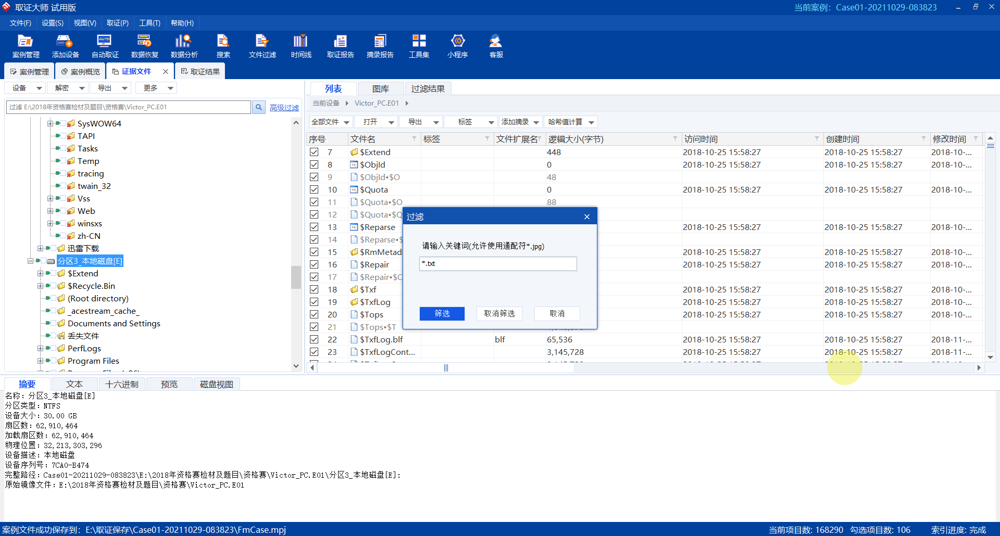
[单选题] 7.在操作系统分区内，$MFT的物理起始扇区位置(Starting physical sector)是什么? (2分)
A. 62,919,936
B. 67,086,648
C. 68,942,784
D. 69,208,064
E. 79,865,960
标记本题
选D
直接在操作系统盘里索引这个文件，找到了这个文件的字节位置35,434,528,768，字节转换为扇区得除512，得69,208,064
[单选题] 8.请找出系统文件“SOFTWARE＂，请问操作系统的安装日期是? （答案格式 －“世界协调时间＂：YYYY-MM-DD HH:MM UTC） (2分)
A. 2018-10-25 08:08 UTC
B. 2018-10-25 08:09 UTC
C. 2018-10-25 08:10 UTC
D. 2018-10-25 08:11 UTC
E. 2018-10-25 08:12 UTC
标记本题
选A
操作系统的安装时间，然后让找文件SOFTWARE，其实这个是让你查注册表的提示，我们直接再取证大师里的自动取证可以找到系统安装时间
不过这里需要注意一个时间区时的问题，这里系统的区时是东八区北京时间，题目问的是UTC，所以减八
[单选题] 9.用户“victor＂的唯一标识符(SID)是什么?（答案格式：RID） (2分)
A. 1001
B. 1002
C. 1003
D. 1004
E. 1005
标记本题
选A
[单选题] 10.用户“Lily＂的唯一标识符(SID)是什么?（答案格式：RID） (2分)
A. 1001
B. 1002
C. 1003
D. 1004
E. 1005
标记本题
选C
[单选题] 11.Victor上一次更改系统登入密码是? （答案格式 －“本地时间＂：YYYY-MM-DD HH:MM +8） (2分)
A. 2018-11-01 16:08 +8
B. 2018-11:01 14:15 +8
C. 2018-10-26 17:00 +8
D. 2018-10-25 08:08 +8
E. 2018-10-25 16:08 +8
标记本题
选E
分析日志：
在取证结果那直接搜索密码或者事件编号：4724

[单选题] 12.Lily上一次更改系统登入密码是? （答案格式 －“本地时间＂：YYYY-MM-DD HH:MM +8） (2分)
A. 2018-11-01 03:02:01 +8
B. 2018-11:02 11:13:33 +8
C. 2018-10-26 17:00:45 +8
D. 2018-10-30 12:30:40 +8
E. 2018-10-27 12:08:37 +8
标记本题
选D
查找位置同上
[单选题] 13.Victor 总共登录系统多少次? (2分)
A. 3
B. 16
C. 33
D. 36
E. 45
标记本题
选D
[单选题] 14.以下哪个帐号已经被禁用? (2分)
A. Administrator
B. victor
C. Lily
D. simon
E. 以上皆不是
标记本题
选A
有两个被禁用的，刚好只有一个选项
[单选题] 15.以下哪个帐系统权限最低? (2分)
A. Administrator
B. victor
C. Lily
D. simon
E. 以上权限一样
标记本题
选D
Administrators组里的用户权限很高，其他的的话只用simon和Guests
[单选题] 16.以下哪个帐号曾经远端登录系统? (2分)
A. Administrator
B. victor
C. Lily
D. simon
E. 远端登入已被禁止
标记本题
选E
这个建议注册表导出来查看，可以用WRR也可以用取证大师
选中系统盘直接注册表解析
在路径：Terminal Server
搜索value:fdenyTsconnections
1:禁用 0:启用
用WRR打开找到远程桌面控制的注册表位置HKEY_LOCAL_MACHINE\SYSTEM\CurrentControlSet\Control\Terminal Server
根据键值0✖0000001
所以是禁用的
[单选题] 17.硬盘操作系统的版本? (2分)
A. Windows 7 Enterprise (32 位)
B. Windows 7 Enterprise (64 位)
C. Windows 7 Professional (32 位)
D. Windows 7 Professional (64 位)
E. Windows 7 Ultimate (64 位)
标记本题
选D
[单选题] 18.操作系统的最新服务包(Service Pack)版本号是什么? (2分)
A. Service Pack 1
B. Service Pack 2
C. Service Pack 3
D. Service Pack 4
E. Service Pack 5
标记本题
选A
取证大师或者WRR在注册表里都可以找到
[单选题] 19.下列哪个是victor的默认打印机? (2分)
A. HP OfficeJet 250 Mobile Series
B. CutePDF Writer
C. Microsoft XPS Document Writer
D. PDF Complete
E. AL-M2330
标记本题
选B
方法一：
仿真起来看设置，
方法二：
查看注册表，取证大师或者WRR都可以
但我没找到>…<
[单选题] 20.在2018-10-31 08:29:32 +8时间, 账号simon曾经使用以下哪个文件? (2分)
A. Microsoft 商店.url
B. ug.jpeg
C. Reddy Resume.doc
D. grocerylistsDOTorg_Spreadsheet_v1_1.xls
E. InvoiceTemplate.docx
标记本题
选C
这道题可以考虑搜索快捷方式解析，在快捷方式中查找时间
可能因为镜像的原因，时间略有偏差
[单选题] 21.接上题，开启上述文件的程序是? (2分)
A. Internet Explorer
B. Firefox
C. 画图
D. WPS 表格
E. WPS 文字
标记本题
查找注册表
[单选题] 22.以下哪个是victor的默认网页浏览器? (2分)
A. Internet Explorer
B. Google Chrome
C. 360浏览器
D. Firefox
E. 迅雷浏览器
标记本题
一、推荐使用仿真的方法，最简单
二、也可以查找注册表
[单选题] 23.victor的回收站里面有一张地图，以下哪个是这张地图原来的文件名? (2分)
A. 捕获.PNG
B. 抓取.PNG
C. Screenshot.PNG
D. Map.bmp
E. Map.jpg
标记本题
选A

[单选题] 24.接上题，上述地图原来的储存路径是? (2分)
A. C:\Users\victor\Pictures
B. C:\Users\victor\Documents
C. C:\Users\victor\Desktop
D. C:\Users\victor\Downloads
E. C:
标记本题
选C

[单选题] 25.找出一个名为”request for quotation.lnk”的档案，并指出该LNK文件的目标路径? (2分)
A. C:\Users\victor\Pictures
B. C:\Users\victor\Documents
C. C:\Users\victor\Desktop
D. C:\Users\victor\Downloads
E. C:
标记本题
选C
[单选题] 26.接上题，上述文件上一次开启的时间是? （答案格式 －“本地时间＂：YYYY-MM-DD HH:MM:SS +8） (2分)
A. 2018-10-29 15:11:43 +8
B. 2018-10-29 19:24:16 +8
C. 2018-10-29 15:11:42 +8
D. 2018-11-01 14:51:25 +8
E. 2018-10-29 07:11:42 +8
标记本题
选D
注意这里说的是上一次开启的时间和快捷方式解析时间还是有区别的
[单选题] 27.接上题，”request for quotation.lnk”的元数据(metadata)记录了以下哪个网卡的物理地址(mac address)? (2分)
A. 00:0C:29:70:F4:47
B. 00:50:56:C0:00:13
C. 47:F4:70:29:0C:00
D. E4:A7:A0:CB:66:C7
E. 00:0C:29:70:F4:47
标记本题
选D
[单选题] 28.系统账号victor使用以下哪个电子邮件发送/接收的程序? (2分)
A. Outlook express
B. Lotus Note
C. Thunderbird
D. Roundcube
E. 没有安装以上软件
标记本题
选C
[单选题] 29.系统经哪个IP地址，登录互联网？ (2分)
A. 10.0.4.1
B. 10.0.4.128
C. 192.168.72.2
D. 192.168.72.128
E. 192.168.72.233
标记本题
选D

[单选题] 30.在该操作系统中，曾经连接数个USB移动储存装置 (U盘)，下列那个是该系统连接过的USB移动储存装置 ? (2分)
A. Verbatim USB Device
B. USB Mass storage USB Device
C. WD 2500BMV External USB Device
D. SanDisk Cruzer Fit USB Device
E. Seagate 250 External USB Device
标记本题
选D
[单选题] 31.在操作系统中，上述U盘曾被指派以下哪个磁盘分区代号(Drive Letter) ? (2分)
A. D:
B. E:
C. F:
D. G:
E. Z:
标记本题
选C
[单选题] 32.该操作系统中，下列哪个是最后的关机时间? （答案格式 －“世界协调时间＂：YYYY-MM-DD HH:MM:SS UTC） (2分)
A. 2018-11-02 08:59:38 UTC
B. 2018-11-02 10:22:40 UTC
C. 2018-11-02 10:23:03 UTC
D. 2018-11-02 10:47:28 UTC
E. 2018-11-02 10:47:51 UTC
标记本题
选B
审题要的是UTC时间
不知道为啥，在系统开关机的时间是10:22:43

[单选题] 33.该操作系统中，下列哪个是计算机的主机名? (2分)
A. VICTOR-COMPUTER
B. WORKGROUP
C. SIMON-HOME
D. VICTOR-HOME
E. LILY-HOME
标记本题
选D

[单选题] 34.接上题，设定为上述计算机主机名前是什么名称? (2分)
A. 42P323K467-22
B. 37L4247F27-25
C. WIN-6S2GC51RGL9
D. USER-PC
E. MY-PC
标记本题
选C
计算机主机名变更问题：
查日志
事件号6011

[单选题] 35.接上题，上述计算机主机名设定时间是? （答案格式 －“本地时间＂：YYYY-MM-DD HH:MM:SS +8） (2分)
A. 2018-10-24 11:07:22 +8
B. 2018-10-28 12:22:59 +8
C. 2018-10-27 13:45:18 +8
D. 2018-10-25 16:04:19 +8
E. 2018-10-25 16:07:38 +8
标记本题
选E
[单选题] 36.在该操作系统中，下列哪个是用户victor日常使用的电邮账号? (2分)
A. victor201811@hotmail.com
B. wictor2018111@hotmail.com
C. victor_201811@google.com
D. victorlam2018@hotmail.com
E. 以上皆不是
标记本题
选A

[单选题] 37.victor 上一次更改上述电邮账号密码是什么时候? （答案格式 －“本地时间＂：YYYY-MM-DD） (2分)
A. 2018-10-29
B. 2018-10-30
C. 2018-10-31
D. 2018-11-01
E. 2018-11-02
标记本题
选C

[单选题] 38.victor什么时候收到勒索电邮? （答案格式 －“本地时间＂：YYYY-MM-DD HH:MM +8） (2分)
A. 2018-11-02 09:09 +8
B. 2018-11-02 09:10 +8
C. 2018-11-02 10:09 +8
D. 2018-11-02 17:09 +8
E. 2018-11-02 17:10 +8
标记本题
选D

[单选题] 39.以下哪个是发出勒索邮件的的IP地址? (2分)
A. 10.152.64.57
B. 10.152.64.217
C. 220.246.55.13
D. 74.208.4.220
E. 10.76.45.13
标记本题
选C
本题有出入，根据取证大师发件人IP为74.208.4.200
然而将附加文件传到微步云沙箱会给出C选项的IP
[单选题] 40.勒索邮件的附件解压后有一个病毒文件，这个文件的MD5哈希值是? (2分)
A. 72596F71248531853F37D4BD15D088C4
B. 15B64B15CC5A5442196471690D4A088B
C. 67A1487E296328C9E802D50741D8DB9C
D. 72596F71248DH3S92LS7D4BD15D088C4
E. 5BB71EF8E95A5249EF4C2A8CFF9A1E1C
标记本题
选B
根据邮件里的密码将附加文件解压，然后用工具计算MD5
[单选题] 41.上述的病毒文件什么时间被系统执行? （答案格式 －“本地时间＂：YYYY-MM-DD HH:MM +8） (2分)
A. 2018-11-02 14:15 +8
B. 2018-11-02 17:09 +8
C. 2018-11-02 17:13 +8
D. 2018-11-02 17:20 +8
E. 2018-11-02 17:23 +8
标记本题
选C
病毒文件执行一般是.exe
找应用程序访问记录
大部分使用JAVA开发，执行之后会产生一个.jar文件
[单选题] 42.这个病毒是否会在重新开机后自动运行?如会，它是通过下列哪个程序执行? (2分)
A. Thunder.exe
B. QyKernel.exe
C. QyClient.exe
D. javaw.exe
E. 病毒不会自动执行
标记本题
选D
[单选题] 43.病毒文件被执行后有以下哪个文件被生成? (2分)
A. E8S377N3N8UOAMS82PQJ.temp
B. tbc_stat_cache.dat
C. JNativeHook_4940080920928265976.dll
D. 83aa4cc77f591dfc2374580bbd95f6ba.tmp
E. downloads.json
标记本题
选C
利用微步云沙箱
[单选题] 44.接上题，上述文件有什么功能? (2分)
A. 获取镜头权限
B. 追踪键盘记录
C. 抓取浏览器密码
D. 抓取系统登入密码
E. 存取系统分区
标记本题
选B
在ida中加载.dll文件，然后看imports函数
[单选题] 45.以下哪个是系统安装的第三方输入法软件? (2分)
A. sogou pinyin
B. sogou wubi
C. Baidu Pinyin
D. QQ Pingyin
E. 以上皆不是
标记本题
选A
[单选题] 46.操作系统是跟哪一个时间服务器自动同步? (2分)
A. time.nist.gov
B. time-a.nist.gov
C. time.windows.com
D. time-b.nist.gov
E. time-nw.nist.gov
标记本题
选C
可以把答案带入去搜
也可以去查找注册表中的NTPserver
[单选题] 47. 法证人员于2018-11-02 下午6时25分到场，之后对系统作以下哪项取证? (2分)
A. 抓取荧幕画面
B. 备份使用者资料
C. 备份浏览记录
D. 抓取网络数据包
E. 制作内存镜像档
标记本题
选E
根据时间和.exe程序
在应用程序访问记录当中搜索时间
然后去网上搜这些exe是干嘛的工具就可以了
找到这个RAM Capture.exe
[单选题] 48. 法证人员到场后，以下哪个软件曾经在系统里运行过? (2分)
A. wireshark.exe
B. Magnet RAM capture.exe
C. Lightscreen.exe
D. fastdump.exe
E. 以上皆不是
标记本题
选B

[单选题] 49.接上题，所抓取的资料被储存为以下哪个文件? (2分)
A. victor_PC_networktraffic.pcapng
B. Lily_PC.networktraffice.pcapng
C. PC_ screenshot.PNG
D. victor_PC_memdump.dmp
E. Lily_PC_memdump.dmp
标记本题
建议带入去搜
根据文件后缀名排除前三项
[单选题] 50.接上题，上述档案储存到以下哪个分区? (2分)
A. D：
B. E：
C. F:
D. G:
E. H:
选C
“美亚杯”第四届中国电子数据取证竞赛-团体赛
本次比赛共1 个章节, 120 个小题, 比赛时长300 分钟, 总共120分
单项选择
[单选题] 第A部份 (第 1 至 12 题) : 根据镜像文件 “c2server.E01” 的内容，回答关于黑客控制的命令服务器(C&C服务器)的问题。
1.黑客控制的命令服务器(C&C服务器)是什么版本的系统? (1分)
A. CentOS 7
B. CentOS 6
C. Ubuntu 18.04
D. Ubuntu 16.04
E. Ubuntu 14.04
标记本题
D

[单选题] 2.该C&C服务器 /dev/sda1 的通用唯一标识符 (UUID) 是什么? (1分)
A. a69c799c-7f0e-4191-9748-66a7e6bc37ad
B. 35a727cd-4440-438f-b3dd-0f82d37f8c0e
C. ec593f12-e418-492d-97af-b804b8208d99
D. 4fce5b91-e899-4807-882f-78c9bcfa66e5
E. 07febb97-674c-4cae-803c-19ce92024ce
标记本题
C
直接在取证大师中搜索相关的配置文件，在etc文件夹中搜索fstab,在这个配置文件中找到UUID
[单选题] 3.系统的时区设定是什么? (1分)
A. Asia/Macao
B. Asia/Hong_Kong
C. Hongkong
D. GMT
E. Etc/GMT+8
标记本题
B
[单选题] 4.黑客曾上传受害公司荣科数码(RKD)文件到C&C服务器，上传方式包括: (i)ftp (ii)ssh (iii)telnet (1分)
A. (i)
B. (ii)
C. (iii)
D. (i) and (ii)
E. (ii) and (iii)
标记本题
A
我们将镜像仿真起来，可以利用FTK先挂载，然后创建相应的虚拟机，也可以用仿影，稍微快一点，然后准备绕过密码单用户登录，进入目标系统查看历史操作(用root权限)history，发现有ftp的相关信息，再查看开放的端口netstat -lntp
发现只开放了21端口。
然后根据这个线索在取证大师中查找FTP的日志文件，进行验证
/var/log/transfer.log
导出分析
发现有很多FTP上传信息，验证成功
[单选题] 5.黑客曾使用哪一个文件传输协议(FTP)服务账户，用作登入C&C服务器上传档案? (1分)
A. upload
B. C&C
C. ftpuser
D. root
E. rdkuser
标记本题
A

[单选题] 6.接上题，C&C服务器中使用了哪个系统账户用作使用文件传输协议(FTP)服务? (1分)
A. upload
B. C&C
C. ftpuser
D. root
E. rdkuser
标记本题
C
我们可以查看系统的操作历史记录，可以在仿真之后直接history
也可以在取证大师中的/root/.bash.history
查看命令日志
发现黑客将ftpuser执行了useradd 添加到了用户组，然后再…..
[单选题] 7. 根据黑客上传的档案，你能找到荣科数码路由器的物理地址(Mac Address)是什么? (1分)
A. A0:B4:A5:E6:86:23
B. EC:1A:59:50:F9:02
C. 74:EA:3A:A3:0D:46
D. 8C:0D:76:B0:69:5C
E. 14:91:82:73:6D:FD
标记本题
C
根据他FTP日志，发现他上传的档案在/home/c2/FTP
在这个文件夹中，可以发现黑客传的一个ip.txt
在这里边找到路由器的默认网关
再在arp.txt （一个ip与mac地址对应关系的文档）
找到这个默认网关对应的mac地址
[单选题] 8.黑客在使用什么软件以暴力破解法取得 Wifi的密码? (1分)
A. Wireshark
B. Fern WiFi Wireless Cracker
C. Kismet
D. Aircrack-ng
E. WepAttack
标记本题
D
[单选题] 9.黑客在什么时候将网络摄录镜头的配置文件cam_config_backup.bin上载到C&C服务器? （答案格式 －“本地时间＂：YYYY-MM-DD HH:MM:SS +8） (1分)
A. 2018-11-01 15:13:17 +8
B. 2018-11-01 17:14:26 +8
C. 2018-11-01 17:18:07 +8
D. 2018-11-01 17:18:24 +8
E. 2018-11-01 17:18:28 +8
标记本题
D
查看FTP日志/var/log/transfer.log
[单选题] 10.哪一个网络地址(IP Address)可追查黑客的位置? (1分)
A. 192.168.7.12
B. 218.255.242.113
C. 218.255.242.117
D. 220.246.55.13
E. 220.246.55.160
标记本题
E
同样是FTP文件地址
[单选题] 11.在命令控制服务器(C&C服务器)中找出从数据库服务器盗取的数据档案,该档案包含多少个数据库? (1分)
A. 1
B. 2
C. 3
D. 4
E. 5
标记本题
不会
[单选题] 12.接上题,从该数据库寻找到受害人林胜”Victor”的顾客资料及交易数据是否存在，以及包含以下属于他的什么数据： (i)电邮地址 (ii)信用卡号码 (iii)身份证号码 (1分)
A. (i)
B. (ii)
C. (i) (ii)
D. (i) (ii) (iii)
E. 没有该数据存在
标记本题
不会

进去先观察各个盘，有的需要卷影分析给分析出来，有的需要BitLocker解密
然后进行自动取整，然后发现有
然后用这个密钥对某个盘进行解密，完事之后再自动取证
[单选题] 13.根据镜像文件 “IT_Notebook.E01” 的内容，回答关于荣科数码(RKD)的笔记本计算机的问题。 13.荣科数码(RKD)的笔记本计算机，其操作系统共有多少个可登录用户？ (1分)
A. 1
B. 2
C. 3
D. 4
E. 5
标记本题
B
启用了两个
[单选题] 14.该笔记本计算机硬盘的第5分区为Bitlocker加密盘，寻找相关的恢复密钥。该密钥最后一组数字为？ (1分)
A. 405579
B. 236947
C. 663058
D. 193194
E. 231904
标记本题
选C
前边已经找过了
###15. [单选题] 15.该笔记本计算机硬盘的操作系统是什么？ (1分)
A. 视窗XP 专业版
B. 视窗7 企业版
C. 视窗8 家用版
D. 视窗10 专业版
E. Linux Ubuntu 18.04 LTS
标记本题
D

###16. [单选题] 16.黑客是通过什么方式入侵该笔记本计算机的操作系统？ (1分)
A. 远程桌面暴力破解(RDP Brute Force)
B. 病毒感染入侵
C. 操作系统漏洞入侵
D. 分布式拒绝服务入侵(DDoS)
E. SQL注入漏洞入侵
标记本题
A
在连接登录的日志中发现有事件：试图使用显示凭据登录
然后搜索该事件4648
发现有很多，那么猜测是远程桌面暴力破解
然后我们再去验证一下，看看时间也是大体对应的
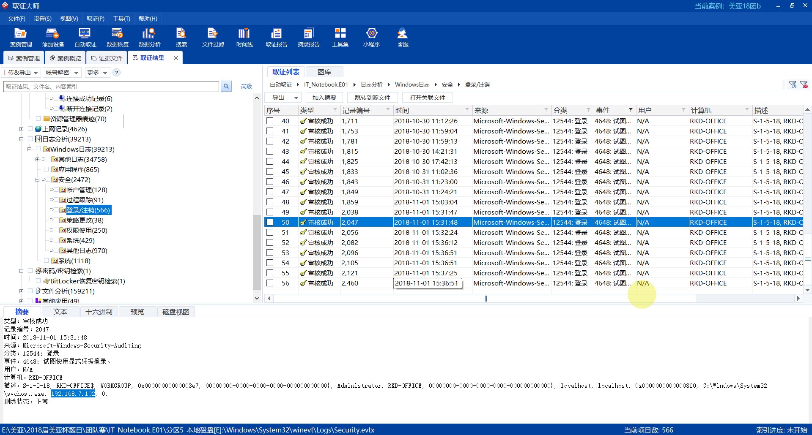

###17. [单选题] 17.接上题，黑客是通过哪个网络地址(IP Address)入侵该荣科数码的操作系统？ (1分)
A. 192.168.7.11
B. 192.168.7.12
C. 192.168.7.16
D. 192.168.7.102
E. 192.168.7.103
标记本题
D
思路同上
 ###18. [单选题] 18.接上题，黑客首次成功入侵该操作系统的日期时间？ （答案格式 －“本地时间＂：YYYY-MM-DD HH:MM:SS +8） (1分)
###18. [单选题] 18.接上题，黑客首次成功入侵该操作系统的日期时间？ （答案格式 －“本地时间＂：YYYY-MM-DD HH:MM:SS +8） (1分)
A. 2018-10-25 16:18:44 +8
B. 2018-11-01 15:23:07 +8
C. 2018-11-01 15:31:42 +8
D. 2018-11-01 15:36:51 +8
E. 2018-11-01 17:42:08 +8
标记本题
C
这个时间应该会在最后一次爆破失败到第一次远程桌面链接成功之间
###19. [单选题] 19.接上题，黑客用于入侵该操作系统的工作站名称？ (1分)
A. RKD-OFFICE
B. BLACK-I
C. WIN-H6OUSLN5PIH
D. ANONYMOUS
E. RKD-GUEST
标记本题
A

###20. [单选题] 20.黑客在该笔记本计算机的Windows资源管理器(Windows Explorer)中曾搜寻过的文字？ (1分)
A. iexplorer, password, login
B. user, password, security
C. s, documents, excel
D. login, password, ipcam
E. password, iexplorer, s
标记本题
E
正常在这能找到的，不知道为啥
###21. [单选题] 21.入侵该笔记本计算机后，黑客透过命令提示符(cmd)执行某些命令，紧接生成了什么文件？ (1分)
A. ip.txt
B. arp.txt
C. netscan.txt
D. ip.txt, arp.txt
E. ip.txt, arp.txt, netscan.txt
标记本题
生成文件一般会产生相应的快捷方式，在文件快捷方式解析里，可以根据他入侵系统时间，来查找这个时间点之后的文件解析
再在目标文件路径中看看有没有包含


###22. [单选题] 22.从笔记本计算机中，寻找黑客的命令控制服务器(C&C服务器)的网络位置？ (1分)
A. 220.246.55.208
B. acdn.adnxs.com
C. 3a95a35cd6b35f714120f210c0ac0c10.clo.footprintdns.com
D. code.jquery.com
E. 220.246.55.212
标记本题
A
没有什么固定的办法就以题搜题
这里找到一个FTP是与前边对应的
###23. [单选题] 23.黑客在该笔记本计算机系统通过什么形式链接命令控制服务器(C&C服务器)？ (1分)
A. FTP
B. SSH
C. TELNET
D. HTTP
E. SFTP
标记本题
A
同上
###24. [单选题] 24.黑客从命令控制服务器(C&C服务器)下载过什么档案到该笔记本计算机？ (1分)
A. putty-64bit-0.70-installer.msi
B. iepv.zip
C. WinSCP-5.13.4-Setup.exe
D. mimikatz_trunk.7z
E. 以上皆是
标记本题
B
借助前几题，查ftp的黑客网址，找浏览器下载缓存
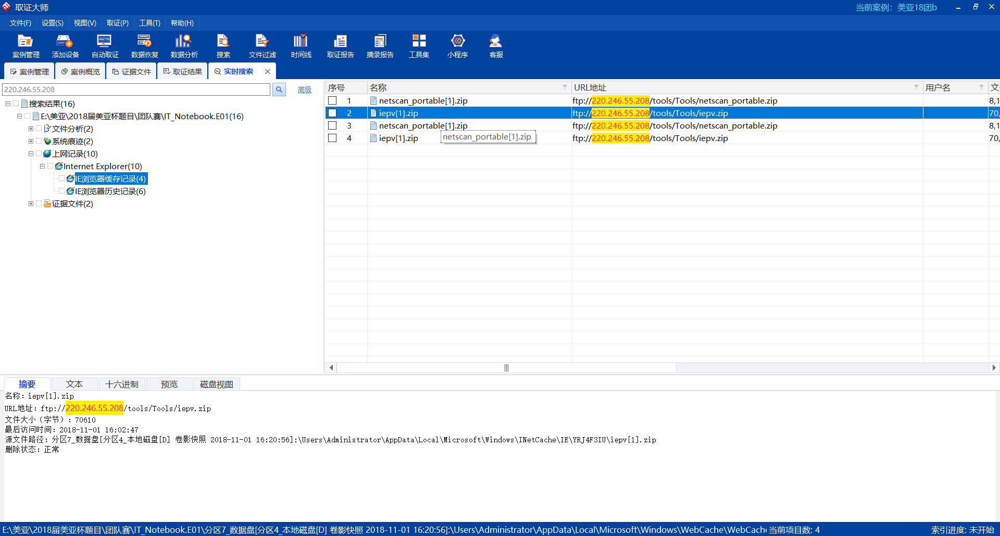
###25. [单选题] 25.黑客从笔记本计算机的网络浏览器Internet Explorer下载过什么档案？ (1分)
A. netscan_portable.zip
B. 7z1805-x64.exe
C. mimikatz_trunk.zip
D. mimikatz_trunk.7z
E. 以上皆是
标记本题
E
###26. [单选题] 26.黑客入侵该笔记本计算机系统后，曾安装过什么软件？ (1分)
A. 7-Zip
B. WinSCP
C. PuTTY
D. Mimikatz
E. SoftPerfect Network Scanner
标记本题
A
查看软件安装，
根据时间排除选A
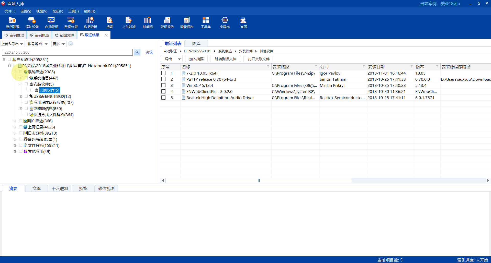
###27. [单选题] 27.在笔记本计算机中，黑客执行程序\Users\Administrator\Desktop\netscan_portable\64-bit\netscan.exe的具体时间？ （答案格式 －“本地时间＂：YYYY-MM-DD HH:MM:SS +8） (1分)
A. 2018-11-01 16:07:12 +8
B. 2018-11-01 16:16:49 +8
C. 2018-11-01 16:04:34 +8
D. 2018-11-01 17:25:12 +8
E. 以上皆不是
标记本题
C
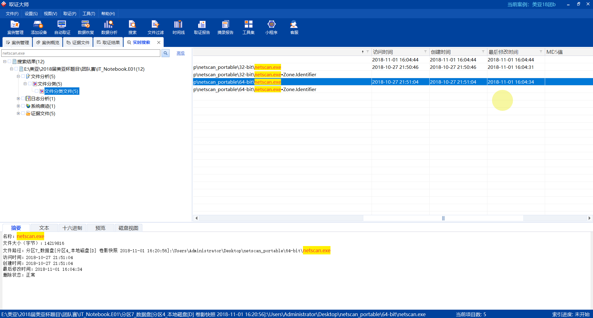
###28. [单选题] 28.2018年11月1日16:06，在笔记本计算机中有多少个关于网络信息的档案被黑客建立？ (1分)
A. 1
B. 2
C. 3
D. 4
E. 5
标记本题
B
救命不会，求教
###29. [单选题] 29.在笔记本计算机中，黑客执行程序\Users\Administrator\Desktop\iepv\iepv.exe的具体时间？ （答案格式 －“本地时间＂：YYYY-MM-DD HH:MM:SS +8） (1分)
A. 2018-11-01 16:07:12 +8
B. 2018-11-01 16:09:07 +8
C. 2018-11-01 16:17:51 +8
D. 2018-11-01 16:18:18 +8
E. 以上皆非
标记本题
A
###30. [单选题] 30.接上题，执行程序iepv.exe涉及什么dll文件？ (1分)
A. NTDLL.DLL
B. MSVCRT.DLL
C. BCRYPTPRIMITIVES.DLL
D. WINDOWS.STORAGE.DLL
E. 以上皆是
标记本题
E
这道题需要我们把这个病毒程序导出来，在本地查看

然后把iepv.exe下载在本机的信任区，用dependency打开
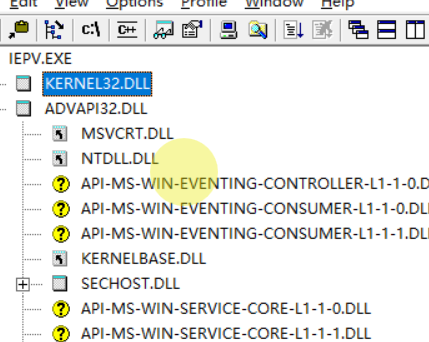
###31. [单选题] 31.接上题，紧接程序iepv.exe执行后，有什么档案被建立，该档案哈希值(MD5)为？ (1分)
A. EDCE37A107A0D661D6B2ABD3449A156E
B. FE26492B12917DFE1B5A65252B8B4798
C. E23B7F04247A927E6EB98C26200135E1
D. B3C9312AC745F20F936577D426456AD8
E. E0836588DA17DA632B82CC2FDDE59E98
标记本题
C
建立哈希库来搜索
也可以反编译或者杀毒软件预警
排除readme.txt这种意义不大，然后的话iepassword.txt和iepv_sites.txt的争议比较大
查看iepassword.txt的文本更可疑，所以猜测就是这个文件
###32. [单选题] 32.在笔记本计算机中，黑客曾执行程序\Users\Administrator\Downloads\mimikatz_trunk\x64\mimikatz.exe多少次？ (1分)
A. 2
B. 3
C. 4
D. 5
E. 6
标记本题
A
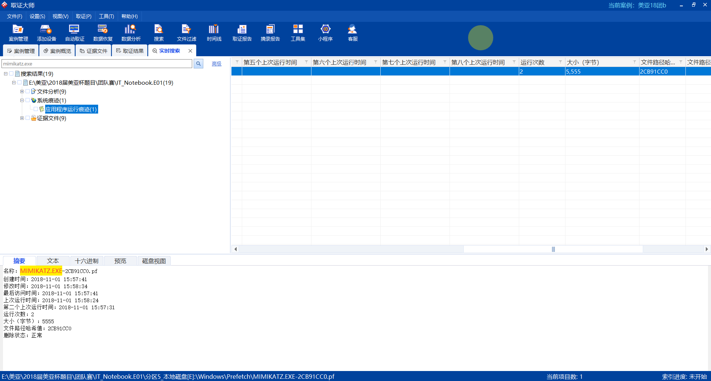
###33. [单选题] 33.接上题，执行上述mimikatz.exe后，黑客曾经输入了什么命令符？ (1分)
A. debug, logonpasswords
B. logon, passwords
C. privilegE：:debug, sekurlsA：:logonpasswords
D. privilegE：:logon, sekurlsA：:passwords
E. 以上皆不是
标记本题
C
根据常识我们知道，mimikatz是内网渗透的神器，执行之后会出现命令提示框输入命令操作
所以我们可以通过mimikatz的日志来追查他使用的命令
###34. [单选题] 34.接上题，mimikatz.exe执行上述命令符后，哪项信息可被黑客用作破解该系统其他用户的密码？ (1分)
A. NTLM: e19ccf75ee54e06b06a5907af13cef42
B. NTLM: 059b6a3134dd40d5543c59da1e10c664
C. SHA1: 9131834cf4378828626b1beccaa5dea2c46f9b63
D. SHA1: 116f90c6089215de0d7f4f530c9276f75a6c5209
E. 以上皆不是
标记本题
B
还是这个日志，我们在里边找到了两个用户信息，一个是Adminbalabalabala这个用户，另一个是auxsup（根据系统用户信息，好像就这俩用户没被禁用）
审题：破解其他用户密码，那肯定是其他用户的信息啊，黑客黑的是Adminbalabalabala，所以找auxsup的信息就可以了，SHA1是不能破解的，所以选B

###35. [单选题] 35.接上题，续上述mimikatz的结果，该密码长度为多少字符？ (1分)
A. 6
B. 7
C. 8
D. 9
E. 以上皆不是
标记本题
B
把那个NTLM给解密
###36. [单选题] 36.在笔记本计算机中，黑客是否使用网络浏览器进入过荣科数码的网络摄像机(IP Camera)进行浏览？如进入过，具体日期及时间为？ （答案格式 －“本地时间＂：YYYY-MM-DD HH:MM:SS +8） (1分)
A. 没有
B. 2018-11-01 16:02:37 +8
C. 2018-11-01 16:09:30 +8
D. 2018-11-01 17:17:14 +8
E. 以上皆不是
标记本题
C
找到很多这样的IP，时间上也相符
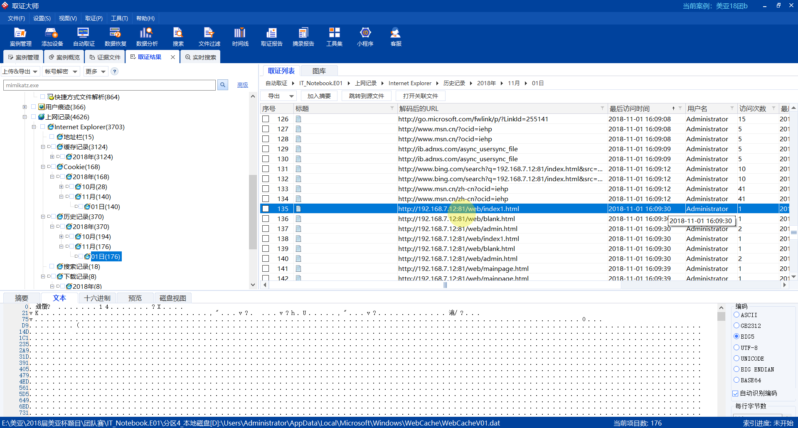
###37. [单选题] 37.在笔记本计算机中，除网络浏览器外，黑客还通过什么软件入侵网络摄像机(IP Camera)？ (1分)
A. WinSCP
B. FileZilla
C. PuTTY
D. 命令提示符(CMD)
E. 档案总管
标记本题
A
以题讲课老师是这么说的
但我还是不太会
###38. [单选题] 38.在笔记本计算机中，黑客从网络摄像机提取了1个档案到该系统硬盘，该档案的哈希值(MD5)为？ (1分)
A. 79985D36B7A860473AA19A0B82B4747E
B. CA47E27329203C266372D04475DB2C57
C. B6C75B8D8C99C35973ECF55C4C345F51
D. C28983B21CA6558D00806CCBDCA5D502
E. BBB0C766E5F65DB23F5F317738FDBCB5
标记本题
C
参考31题创建哈希库
然后经过时间和常识的筛选，应该是这个

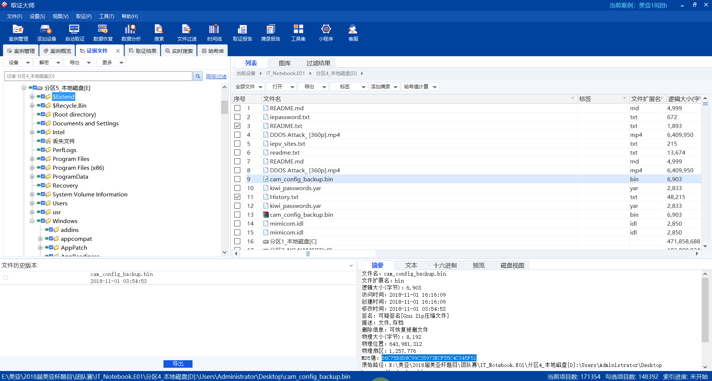
###39. [单选题] 39.接上题，分析上述从网络摄像机提取的档案，除账户admin外还有什么登陆账户发现？ (1分)
A. user
B. public
C. guest
D. user, guest
E. user, public
标记本题
D
同上题，直接搜，然后查看
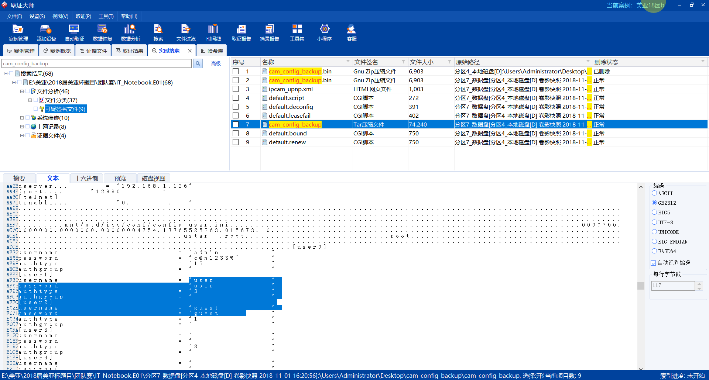
###40. [单选题] 40.接上题，网络摄像机可以透过什么方式链接多流媒体服务器？ (1分)
A. SFTP
B. TELNET
C. SSH
D. FTP
E. 以上皆不是
标记本题
D

###41. [单选题] 41.在笔记本计算机中，黑客曾经使用系统的记事本(Notepad)最后开启的一个文件名称为? (1分)
A. config_alarm.ini
B. config_3thddns.ini
C. readme.txt
D. desktop.ini
E. 以上皆不是
标记本题
A
不行了，不太会
直接仿真，因为是windows系统，先查注册表看登录密码，\HKEY_LOCAL_MACHINE\SOFTWARE\Microsoft\Windows NT\CurrentVersion\Winlogon
“DefaultDomainName”后面即用户名，“Defaultpassword”后面即密码。(扯淡的是找了半天注册表才发现没有密码)
直接进去打开Notepad，在里边分析

[单选题] 42.在笔记本计算机中，黑客最后把被入侵用户桌面的档案全部删除，具体删除的日期时间是？ （答案格式 －“本地时间＂：YYYY-MM-DD HH:MM:SS +8） (1分)
A. 2018-11-01 15:32:46 +8
B. 2018-11-01 15:34:29 +8
C. 2018-11-01 17:32:29 +8
D. 2018-11-01 17:43:09 +8
E. 以上皆不是
标记本题
C
这道题注意审题，黑客最后把桌面上的文档全删了，我们查看远程连接，看他断开连接的时间是多少
再在卷影快照的桌面文档中看桌面文档大约什么时候消失的，找这两个时间点的区间
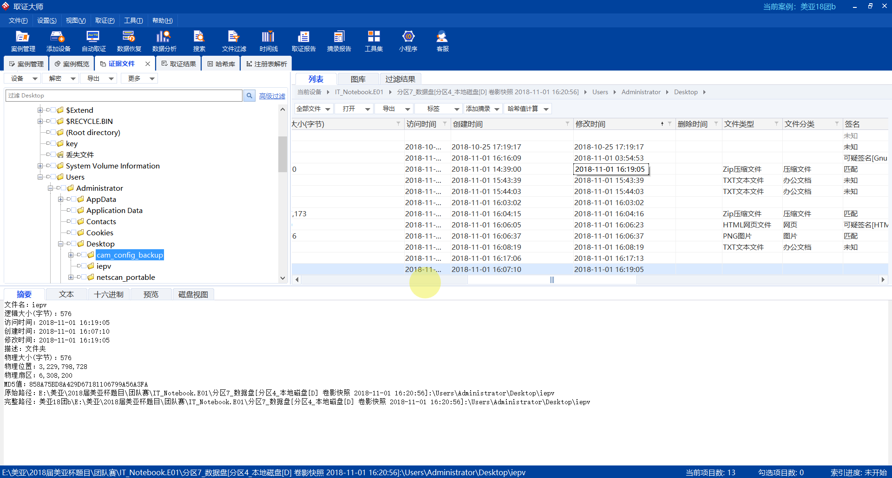

[单选题] 第C部份 (第 43 至 54 题) : 根据镜像文件 “Streaing Server.E01” 的内容，回答关于荣科数码(RKD)的流媒体服务器的问题。
43.荣科数码(RKD)的流媒体服务器的主机名称是什么? (1分)
A. pi
B. Streaming Service
C. C&C Server
D. RKD
E. raspberrypi
标记本题
E

[单选题] 44.黑客首次进入流媒体服务器的时间是什么? （答案格式 －“世界协调时间＂：YYYY-MM-DD HH:MM UTC） (1分)
A. 2018-11-01 16:17
B. 2018-11-01 08:34
C. 2018-11-01 08:17
D. 2018-11-01 01:17
E. 2018-11-01 00:42
标记本题
C
时间问题先考虑时区
这道题可以通过log日志来看\var\log
其中btmp是登录失败的日志，如果出现数据很多的话可能存在暴力破解
这里我们查看syslog
数据比较多，可以先根据时间大体锁定，然后根据连接成功语句来锁定
其实也可以在wtmp这里查看，不过这是个二进制文件需要linux的ls命令


[单选题] 45.下面哪一个是流媒体服务器 “eth0” 的网络地址(IP Address)? (1分)
A. 10.0.4.10
B. 10.0.4.15
C. 192.168.7.11
D. 192.168.7.12
E. 192.168.7.103
标记本题
A
也可以把选项带入搜，更准确

[单选题] 46.下面哪一个是流媒体服务器 “wlan0” 的网络地址(IP Address)? (1分)
A. 10.0.4.10
B. 10.0.4.15
C. 192.168.7.11
D. 192.168.7.12
E. 192.168.7.103
标记本题
E
带入搜更准
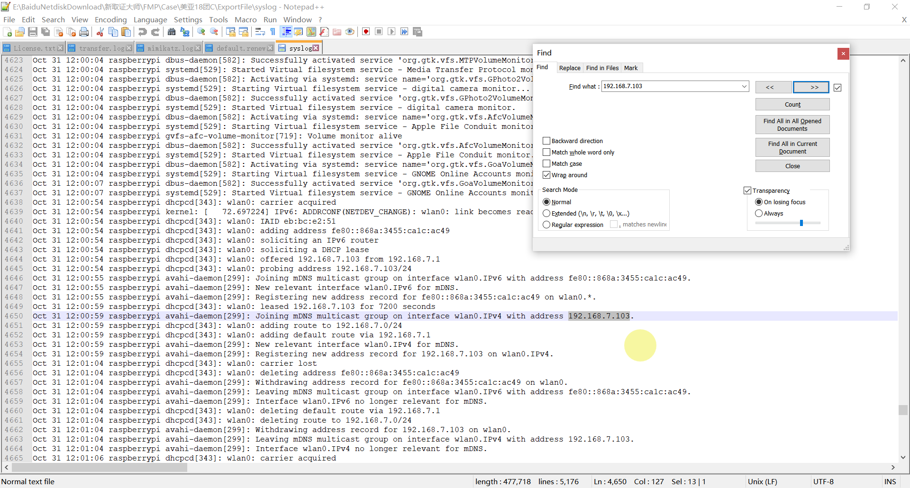
[单选题] 47.下面哪一个是流媒体服务器曾经同步时间的网络时间协议(NTP)服务器的网络地址(IP Address)? (1分)
A. 192.168.7.1
B. 10.0.4.1
C. 110.115.125.123
D. 203.95.213.129
E. 220.246.55.208
标记本题
D
同样去syslog中，搜索同步时间的标注timesyncd

[单选题] 48.在流媒体服务器中，根据账户”pi”的指令记录，黑客首次输入指令 “cat /etc/shadow” ，他从中获得了什么信息? (1分)
A. 流媒体服务器内的用户名称
B. 流媒体服务器内的用户密码
C. 流媒体服务器内的用户密码更换日期
D. 流媒体服务器的网络位置
E. 因没有权限，什么信息也得不到
标记本题
E
看到他输入的是终端的命令，想到分析他终端的数据内容
紧接着下一条sudo cat /etc/shadow
猜测这条权限不够
而且查询pi用户，他不是root用户所以权限很低，印证推测


[单选题] 49.在流媒体服务器中，账户”pi”曾在流媒体服务器安装了什么软件? (i) nmap (ii) arp-scan (iii) bind9 (1分)
A. (i)
B. (ii)
C. (iii)
D. (i)、(ii) and (iii)
E. (ii) and (iii)
标记本题
D
在/var/log/apt/history.log中记录使用apt-get安装卸载软件的信息
还可以在取证那搜索install


[单选题] 50.为什么黑客在流媒体服务器安装 “bind9”? (1分)
A. 为取得流媒体服务器 “root” 的权限
B. 为记录键盘的记录
C. 为截取网络上的数据包
D. 为提供域名系统服务(DNS)
E. 为扫描网络中其他计算机的网络位置
标记本题
D
1 | 这道题不太明确 |
[单选题] 51.黑客把C&C服务器下载的档案sys.c放置在数据库服务器哪一个位置? (1分)
A. /
B. /home/
C. /home/root/
D. /home/rongke/
E. /home/auxsup/
标记本题
E
就是问这个文件在哪，直接搜
这个地方是用户的根目录下边
[单选题] 52.为什么黑客能够连接网路 10.0.4.0/24 ? (1分)
A. 因为此网路连接了互联网
B. 因为路由器中的访问控制列表(Access Control List)没作出限制
C. 因为流媒体服务器同时接驳了互联网及上述网路
D. 因为网络摄影机同时接驳了互联网及上述网路
E. 以上皆不是
标记本题
C
好像是说流媒体服务器既连接了互联网，又连接了10.0.4.10的这个网段
这个流媒体服务器接上的ip有10.0.4.10和10.0.4.15
所以推测
[单选题] 53.黑客在流媒体服务器加入了多少条防火墙规则? (1分)
A. 0
B. 1
C. 2
D. 3
E. 4
标记本题
C
加入防火墙规则涉及iptables命令
[单选题] 54.在流媒体服务器中，黑客何时在删除档案 “HACK.jpg”? （答案格式 －“本地时间＂：YYYY-MM-DD HH:MM:SS +8） (1分)
A. 2018-11-01 09:09:15 +8
B. 2018-11-01 17:12:40 +8
C. 2018-11-01 17:15:02 +8
D. 2018-11-02 09:09:15 +8
E. 2018-11-02 17:15:02 +8
标记本题
C


[单选题] 第D部份 (第 55 至 84 题) : 根据镜像文件，其文件名为 “RongkeDatabaseD1.E01”, “RongekeDatabaseD2.E01”, “RongekeDatabaseD3.E01” 的内容，回答关于荣科数码(RKD)的数据库服务器的问题。 注意: 该系统时区未被正确设定，记录文件(log)内的时间较实际时间快16小时，且没有连结互联网。
55.荣科数码(RKD)的数据库服务器有多少个磁盘冗余数组(RAID)的虚拟块设备Multiple Devices(md)? (1分)
A. 0
B. 1
C. 2
D. 3
E. 4
标记本题
D
三个送分的
[单选题] 56.该数据库服务器设有多少个卷组（VG）、逻辑卷（LV）？ (1分)
A. 一个卷组、两个逻辑卷
B. 两个卷组、两个逻辑卷
C. 两个卷组、三个逻辑卷
D. 三个卷组、三个逻辑卷
E. 三个卷组、四个逻辑卷
标记本题
这道题尝试用取证大师直接分析磁盘阵列分析不出来
FTK挂载+VMware虚拟机读取+虚拟机绕过登陆密码
然后root登录后，执行命令
vgdisplay |more 分页显示卷组
lvdisplay |more 分页显示逻辑卷
选C
[单选题] 57.该数据库内，挂载”/home”分割所在的卷组（VG）的UUID为？ (1分)
A. YaPmrx-aWuN-jB9F-bK6V-5mrf-qDD1-RKttcS
B. zd02XF-jjsB-Nelp-RhA3-Xesv-PbXZ-FbVYsv
C. 6tPmv1-CHhY-3Th3-d1ZO-NkCE-JH3k-zp4dtA
D. CHFrqt-VMqH-eTcq-6khn-k8MC-UO4i-zZwuWN
E. MOHN39-Ly2p-5km1-d2mi-3SeN-fTVu-y0PF58
标记本题
D
在逻辑卷Vg2中发现/home
那么题目问的是卷组，就去找Vg2的卷组
也可以查看取证大师，这里直接用挂载的磁盘，然后扫描动态磁盘


[单选题] 58.该数据库内，”/boot”所在的虚拟块设备(Multiple Devices)总阵列大小(ARRAY SIZE)？ (1分)
A. 3900416 (3.72 GiB 3.99 GB)
B. 6831104 (6.51 GiB 7.00 GB)
C. 10218496 (9.75 GiB 10.46 GB)
D. 5109248 (4.87 GiB 5.23 GB)
E. 3415552 (3.26 GiB 3.50 GB)
标记本题
A
仿真起来看lsblk -f 看当前的目录结构
df -T 查看大小和结构
相差不大
[单选题] 59.该数据库服务器的时区设定为？ (1分)
A. Asia/Macao
B. Asia/Hong_Kong
C. Hongkong
D. GMT
E. Etc/GMT+8
标记本题
E
运行命令
timedatectl
[单选题] 60.根据串流服务器的记录, 黑客入侵后曾横向登入数据库服务器，其登入方式包括: (i)ftp (ii)ssh2 (iii)telnet (1分)
A. (i)
B. (ii)
C. (iii)
D. (i) and (ii)
E. (ii) and (iii)
标记本题
B
查日志
/var/log/auth.log
发现了黑客的登录方式ip
[单选题] 61.接上题,首次成功登入数据库服务器的时间及账户为? （答案格式 － 账户名称 日期时间 “依第59条时区设定作答＂：YYYY-MM-DD HH:MM) (1分)
A. rkdadm 2018-11-01 16:33
B. auxsup 2018-11-01 16:33
C. auxsup 2018-11-02 08:33
D. root 2018-11-01 16:33
E. root 2018-11-01 16:31
标记本题
B
找第一个就OK
前边全是登录失败，直到这个地方成功，而且来源IP也正确
再加上时间的计算，因为开头说这个服务器没联网比实际快了16小时
[单选题] 62.接上题，该账户在数据库服务器属于以下哪些用户组? (i)root (ii)www-data (iii)sudo (1分)
A. (i)
B. (ii)
C. (i) and (ii)
D. (ii) and (iii)
E. 以上皆不是
标记本题
E

[单选题] 63.在该成功远程登录数据库服务器前曾经被多次登入失败，登入的用户名称包括： (i)root (ii)admin (iii)pi (1分)
A. (i)
B. (ii)
C. (i)及(iii)
D. (ii)及(iii)
E. 以上皆是
标记本题
C
继续分析那个日志/var/log/auth.log

[单选题] 64.接上题，该账户登入数据库服务器后，使用了哪一个CVE的漏洞进行提权？ (1分)
A. CVE - 2015 - 1328
B. CVE - 2015 - 8660
C. CVE - 2017 - 1000112
D. CVE - 2017 - 0358
E. CVE - 2017 - 16995
标记本题
C
继续分析日志，然后就不会了
[单选题] 65.接上题，黑客在数据库服务器进行提权中曾使用哪些工具？ (1分)
A. exec
B. javaw
C. msfvenom
D. psexe
E. gcc
标记本题
E
日志搜索
除了gcc其他都搜不到

[单选题] 66.黑客在数据库服务器成功提权后，紧接进行了什么动作？ (1分)
A. 使用另一账户登入
B. 制作后门
C. 截取数据包
D. 建立新账户
E. 安装软件
标记本题
D

[单选题] 67. 除首次被黑客登入的帐户外，还有什么账号被不当地登入使用？ (1分)
A. rkduser
B. rkduser1
C. rkduser2
D. rkduser3
E. rkduser4
标记本题
不会
[单选题] 68.该数据服务器经哪个IP得到连接互联网功能？ (1分)
A. 10.0.4.1
B. 10.0.4.10
C. 10.0.4.16
D. 192.168.7.103
E. 10.0.4.17
标记本题
B
日志当中连接IP都是B
[单选题] 69.黑客在数据库服务器设定了一个反向shell(reverse shell)后门，请找出该连接使用什么端口(Port) ？ (1分)
A. 5251
B. 5140
C. 40
D. 51
E. 5152
标记本题
E
69和70结合来看，推测这个shell是定时触发的
查看定时任务的文件夹crontabs

[单选题] 70.接上题，该数据库服务器的后门何时会执行? (1分)
A. 管理员登入
B. 系统开机时
C. 数据库被存取时
D. 每一天
E. 每一分钟
标记本题
E

[单选题] 71.黑客在该数据库服务器中进行了内网扫描，其扫描范围是： (1分)
A. 10.0.4.0 / 22
B. 10.0.4.0 / 24
C. 192.168.7.0 / 24
D. 192.168.7.103 / 24
E. 10.0.4.15 / 24
标记本题
B
没说借助其他工具，应该就是在终端里进行的命令执行
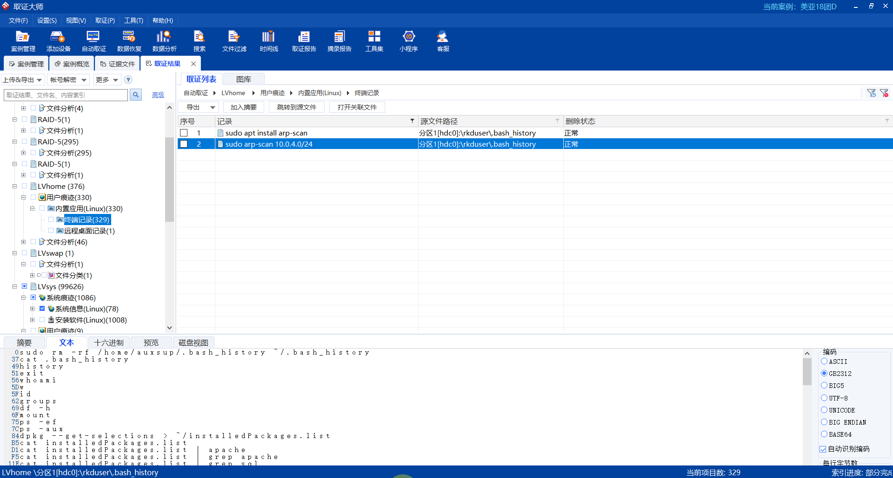
[单选题] 72.接上题，在该内网中有一台主机名名称为”RKDSERVER1”，黑客曾由数据库试图登入该主机，其登入方式为： (i)ftp (ii)ssh2 (iii)telnet (1分)
A. (i)
B. (ii)
C. (iii)
D. (i)及(ii)
E. (ii)及(iii)
标记本题
C
先去host文件下看看关于这台主机的配置信息 /etc/hosts
查到RKDSERVER1的IP
然后再用IP在终端中查找命令


[单选题] 73.黑客在登入期间，曾经尝试登入数据库服务器的MYSQL数据库，总共失败多少次？(MYSQL的记录文件时间设定较实际时间快4小时） (1分)
A. 6
B. 8
C. 10
D. 12
E. 14
标记本题
B
到MySQL的error.log分析
\var\log\mysql\error.log
搜索拒绝连接denied，然后再根据时间分析合理的就8个

[单选题] 74.在数据库服务器中，档案路径 ＂\home\rkduser\t＂ 是什么类型的档案？ (1分)
A. tcpdump capture file
B. ELF 64-bit LSB executable, x86-64
C. ASCII text
D. UTF-8 Unicode text
E. Bourne-Again shell script
标记本题
A
找到这个文件，导出来查看
有一些乱码啥的猜测是数据包
用wirshake打开印证
[单选题] 75.在数据库服务器中，黑客使用什么指令工具对数据包进行截取？ (1分)
A. arp-scan
B. nmap
C. fgdump
D. tcpdump
E. wireshark
标记本题
D
带进去搜就可以，但是这里注意arp-scan和tcpdump的区别
搜出来的内容不会判断的话可以去了解一下这两款工具
arp-scan是ARP扫描工具
tcpdump是流量组截取工具 自然选C
[单选题] 76.接上题，黑客共截获多少个数据包项目？ (1分)
A. 1041
B. 2825
C. 6070
D. 4032
E. 5484
标记本题
C
结合74题，黑客dump出来的数据包
[单选题] 77.接上题，截取数据包过程中，有多少次上述反向shell(Reverse shell)后门的成功连接？ (1分)
A. 0
B. 14
C. 1
D. 15
E. 7
标记本题
A

我们从这个配置信息中找到shell的端口是5152
然后我们在流量包中分析这个端口的流量
刚巧全是失败的，回应的数据包全是零

[单选题] 78.接上题，黑客从数据包中获得的MYSQL数据库密码长度是多少个字符? (1分)
A. 4
B. 6
C. 9
D. 12
E. 15
标记本题
E
没有找到
[单选题] 79.黑客登入上述MYSQL数据库后，曾在CLI界面使用MYSQL命令进行了多少个数据库及数据表(Table)的浏览？ (1分)
A. 一个数据库内的两个数据表
B. 两个数据库内的两个数据表
C. 一个数据库内的三个数据表
D. 两个数据库内的三个数据表
E. 三个数据库内的三个数据表
D
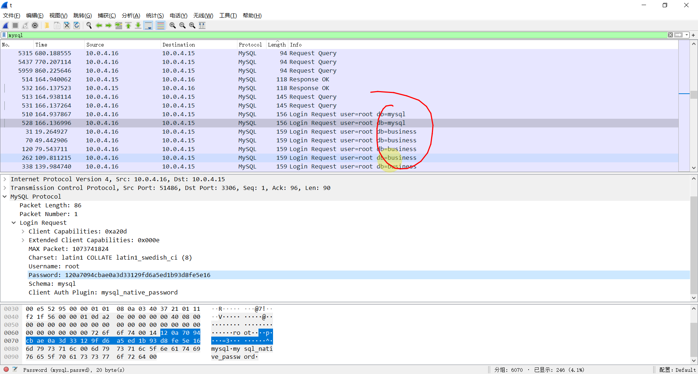
根据黑客输入的命令挨个找
[单选题] 80.数据库服务器中，黑客曾连接过哪一个FTP服务器? (1分)
A. 220.246.55.208
B. 10.0.4.10
C. 10.0.4.16
D. 192.168.7.103
E. 220.246.55.13
A

[单选题] 81.接上题，该FTP服务器的上载账号名称及密码是： (1分)
A. upioad, 123456
B. upload, 123456
C. upload, 12345
D. admin, 123456
E. admin, abcdef
B 
[单选题] 82.黑客在数据库服务器注销前，进行了什么动作？ (1分)
A. 传送数据库数据
B. 删除命令痕迹
C. 汇出数据库
D. 卸除软件
E. 设置后门
标记本题
B

[单选题] 83.在数据库服务器中，恢复inode值为258177的档案，计算其SHA1哈希值 (1分)
A. 42323B19952CF79D626AD51FF14A5F201CFE969C
B. B151D2CCE44D80AB860879C0FE5BB7326C5A7F3D
C. EA4A616DF97B59F7672865DC1FB449DD8E4DF3E2
D. 8C3A07CC7E594E696F3C7A79EDB9C762905839A1
E. B3CDCEABD7B672603F9D6F63D037053C63D5F5B6
C
挂载起来ls -i 查看目标文件的inode值
根据值来查找 find -inum 258177
然后计算文件哈希值 sha1sum <文件名>
[单选题] 84.在数据库服务器中，路径”/usr/sbin”内有多少个系统文件被不当替换? (1分)
A. 1
B. 2
C. 3
D. 4
E. 以上皆不是
E

[单选题] 第E部份 (第 85 至 95 题) : 法证人员曾在Victor的计算器现场作现场取证，并使工具获取其内存镜像。该内存镜像文件名为 “victor_PC_memdump.dmp”，请使用该档案作内存数据分析并回答下列问题:
从内存镜像档案的数据显示，该镜像档案的建立日期是? （答案格式 －“世界协调时间＂：YYYY-MM-DD HH:MM:SS UTC） (1分)
A. 2018-11-02 08:31:12 UTC
B. 2018-11-02 10:31:12 UTC
C. 2018-11-02 14:31:12 UTC
D. 2018-11-02 18:31:12 UTC
E. 2018-11-02 20:31:12 UTC
B

[单选题] 86.在内存镜像中，就进程javaw.exe而言，它的进程id是? (1分)
A. 2364
B. 2616
C. 26
D. 459
E. 8003975b30
A

[单选题] 87.接上题，javaw.exe 是经以下哪个方法在系统上执行 ？ (1分)
A. 利用命令提示符(cmd)执行
B. 利用psexec软行
C. 于Windows资源管理器上双击档案执行
D. 于运行中执行
E. 于系统启时自动执行
C
看他的父进程刚好是explorer.exe
[单选题] 88.接上题，根据javaw.exe 的进程，它首先执行了下列哪个指令 (1分)
A. C:\Program Files\Java\jdk1.8.0_191(2)\bin\javaw.exe” -jar C:\Users\victor\AppData\Roaming\asdasd\asda.jar
B. C:\Program Files\Java\jdk1.8.0_191\bin\javaw.exe” -jar C:\Users\victor\AppData\Roaming\asdasd\asda.jar
C. C:\Program Files\Java\jdk1.8.0_191\bin\javaw.exe” -jar C:\Users\victor\AppData\Roaming\asdasd\victor_personal_data.pdf.jar
D. C:\Program Files\Java\jdk1.8.0_191(1)\bin\javaw.exe” -jar C:\Users\victor\AppData\Roaming\asdasd\asda.jar
E. C:\Program Files\Java\jdk1.8.0_191(1)\bin\javaw.exe” -jar C:\Users\victor\AppData\Roaming\asdasd\victor_personal_data.pdf.jar
[单选题] 89.接上题，javaw.exe的进程在执行时会呼叫了多少个动态链接函式库(Dynamic Linked Library)? (1分)
A. 79
B. 80
C. 81
D. 82
E. 83
D
用dlllist命令查看javaw.exe的进程执行时调用的动态链，数一数

[单选题] 90.接上题，javaw.exe的进程曾连接至哪一网络地址(IP Address)？ (1分)
A. 119.188.13.180
B. 192.168.72.128
C. 220.246.55.13
D. 120.241.102.156
E. 23.41.99.52
C
1 | volatility -f E:\美亚\2018届美亚杯题目\团队赛\victor_PC_memdump.dmp --profile=Win7SP1x64 netscan |

[单选题] 91.接上题，javaw.exe的进程曾连接至上述网络地址的哪个端口(port)？ (1分)
A. 1505
B. 1506
C. 49290
D. 1505 & 1506
E. 1505 & 49290
B 
[单选题] 92.从内存镜像中提取Victor计算机感染的”Adwind RAT”病毒的配置文件(XML格式)并作分析，该病毒档案与C&C服务器连接所使用的密码为? (1分)
A. 1234
B. 5555
C. 2468
D. 0000
E. 9999
标记本题
[单选题] 93.接上题，上述”Adwind RAT “病毒具备了屏幕截图的功能。从内存镜像中分析，黑客是何时对系统进行屏幕截图呢? (以截图显示时间作答) (1分)
A. 2018年11月2日18时27分至18时28分
B. 2018年11月2日18时28分至18时30分
C. 2018年11月2日18时29分至18时30分
D. 2018年11月2日18时29分至18时31分
E. 2018年11月2日18时28分至18时29分
[单选题] 94.取证人员是使用”Magnet RAM Cap”获取该内存镜像，你能找到该档案属于哪个版本吗? (1分)
A. 0.90
B. 1.00
C. 1.01
D. 0.91
E. 1.50
B

[单选题] 95.从内存镜像中，你能读取多少个操作系统的用户登入密码? (1分)
A. 0
B. 1
C. 2
D. 3
E. 4
B
一共三个哈希值，只有一个是真的


[单选题] 第F部份 (第 96 至 120 题) : 关于手机取证的问题 根据一个“三星SM-N9005 Galaxy Note 3＂的手机镜像文件 “DumpData.bin” 的内容，回答下述手机取证问题。 (该文件是由Cellebrite Physical Extraction采集而来的。)
96.检测“三星SM-N9005 Galaxy Note 3＂的手机镜像文件并找出系统分区。请问系统分区(system partition)的大小是多少？ (1分)
A. 1.2 GB
B. 2.2 GB
C. 4.6 GB
D. 12.2 GB
E. 15 GB
标记本题
B

[单选题] 97.接上题，在手机镜像文件中，系统分区(system partition)的文件系统类型是什么？ (1分)
A. YAFFS
B. YAFFS2
C. Ext3
D. Ext4
E. 以上皆不是
D

[单选题] 98.检测手机镜像文件并找出用户数据的分区。请问用户数据分区(userdata partition)的大小是多少？ (1分)
A. 3.1 GB
B. 2.9 GB
C. 4.6 GB
D. 12.2 GB
E. 11.9 GB
E

[单选题] 99.接上题，在手机镜像文件中，请问该用户数据分区(userdata partition)的文件系统类型是什么？ (1分)
A. YAFFS
B. YAFFS2
C. Ext3
D. Ext4
E. FAT
D 
[单选题] 100.如果手机安装了应用程序，你会在哪个位置找寻该应用程序的“apk＂文件？ (1分)
A. /root/app/
B. /system/apps/
C. /system/media/apk/
D. /system/application/
E. 以上皆不是
B

[单选题] 101.该手机显示设备的时区是什么？ (1分)
A. Europe/London
B. Europe/Amsterdam
C. Asia/Hong_Kong
D. Asia/Bangkok
E. 以上皆不是
C
一般时区信息在timezone里查询
[单选题] 102.在手机镜像文件中，找出“com.android.email＂文件夹，数据库中设置的电子邮件地址是什么？ (1分)
A. digitalrongke@gmail.com
B. victorlam@gmail.com
C. rongkedigital@mail.com
D. kedigital@hotmail.com
E. 以上皆不是
涉及数据库的解析，导出数据库文件夹，用
[单选题] 103.接上题，上述数据库共有多少条电子邮件记录？ (1分)
A. 9
B. 10
C. 21
D. 50
E. 5
[单选题] 104.接上题，谁是首个电子邮件的接收者？ (1分)
A. kedigital@hotmail.com
B. jc266575@gmail.com
C. rongkedigital@mail.com
D. digitalrongke@gmail.com
E. 以上皆不是
标记本题
[单选题] 105.接上题，服务器的时间戳显示的第一个电子邮件的发送日期／时间是什么？ （答案格式 －“世界协调时间＂：YYYY-MM-DD HH:MM:SS UTC） (1分)
A. 2018-10-29 21:30:18 UTC
B. 2018-10-26 06:21:02 UTC
C. 2018-10-29 21:33:54 UTC
D. 2018-10-31 07:26:51 UTC
E. 2018-10-31 08:26:11 UTC
标记本题
[单选题] 106.在手机镜像文件中，哪一个文件包含日历记录？ (1分)
A. calendar.base.db
B. database_calendar.db
C. calendar_record.db
D. calendar.db
E. ddcalendar.db
挨个搜呗
D
[单选题] 107.在手机镜像文件的下载文件夹中，该手机用户下载了哪个“apk＂文件？ (1分)
A. Evernote.apk
B. kodi.apk
C. CloudAgent.apk
D. channel_71067978_1005035_1539597843180.apk
E. 以上皆不是
D
可以直接搜download 然后挨个找，如果嫌麻烦可以记住路经

[单选题] 108.在手机镜像文件中，哪个文件用于存储“微信”记录？ (1分)
A. chatmessages.db
B. msgstore.db
C. mm.sqlite
D. chatstorage.db
E. EnMicroMsg.db
E
[单选题] 109.接上题，检查“微信＂数据库，请问Leo和Jason在2018年10月31(UTC+8)日共有多少条通讯记录？ (1分)
A. 7
B. 20
C. 30
D. 5
E. 9
[单选题] 110.在手机镜像文件中，用户在2018-10-31(UTC+8)截取了多少个截图？ (1分)
A. 5
B. 20
C. 7
D. 2
E. 8
标记本题
[单选题] 111.接上题，该截图的文件名是什么，请选择最早的一个档案？ (1分)
A. Screenshot_2018-10-31-16-08-57.png
B. Screenshot_2018-10-31-12-08-12.png
C. Screenshot_2018-10-31-17-02-51.png
D. Screenshot_2018-10-28-15-00-10.png
E. Screenshot_2018-10-30-09-08-17.png
标记本题
[单选题] 112.在手机镜像文件中，安装了哪种黑客软件？ (1分)
A. Hack-it
B. Ethicalhacking
C. I Hack You
D. LUCKY HACK PATCHER
E. 以上皆不是
B
B能搜到，而且时间也对应
[单选题] 113.接上题，该应用程序是什么时候安装的？ （答案格式 －“世界协调时间＂：YYYY-MM-DD HH:MM:SS UTC） (1分)
A. 2018-10-31 09:05:26 UTC
B. 2018-11-01 22:21:08 UTC
C. 2018-10-26 23:37:34 UTC
D. 2018-10-31 17:05:26 UTC
E. 2018-10-31 09:21:01 UTC
A
同上，注意时间转化
[单选题] 114.在手机镜像文件的用户媒体文件夹中，有涉及枪支的照片／图片，档案的名称是什么 (1分)
A. 20181101_160634.jpg
B. 20181031_153537.jpg
C. 20181031_170633.jpg
D. 20181031_091635.jpg
E. 20181031_070813.jpg
C
去用户媒体文件夹中索引搜索 /userdata/media
搜索 *.jpg
[单选题] 115.在手机镜像文件中，哪个文件记录了联系人（电话簿）？ (1分)
A. contact1.db
B. database.contacts.db
C. contacts1.db
D. contacts2.db
E. contact.db
D
只有contacts2.db能准确的搜到
[单选题] 116.接上题，有多少个现有联系人记录？ (1分)
A. 7
B. 13
C. 9
D. 15
E. 8
[单选题] 117.在手机镜像文件中的联系人数据库中，共有多少个电子邮件帐户？ (1分)
A. 1
B. 6
C. 7
D. 3
E. 2
标记本题
[单选题] 118.接上题，在联系人数据库的已删除记录中，以+852 6__________开头的电话号码是什么？请填写空格. (1分)
A. +852 66253737
B. +852 67486468
C. +852 63873984
D. +852 61810641
E. +852 67645745
标记本题
[单选题] 119.在手机镜像文件中，曾使用过的无线网络名称(SSID)是？ (1分)
A. WPA-PSK
B. RKD-WPA
C. RKD_guest
D. PSK-RKD
E. 以上皆不是
标记本题
[单选题] 120.该手机存有苹果手机备份密码，这个密码是？ (1分)
A. Sgydgd
B. 6152jHD
C. Os156871
D. $RFV5tgb
E. Trey123$%^
案件介绍：
1、何源是一名25岁的客服人员，在一间电讯公司工作。某日，何源在用iPhone手机在政府建筑物中偷拍车牌期间被警员截停，盘问期间警员检查手机相册发现多张车牌图片，何源情绪紧张，趁警员不被，抢过手机丢入车流，被完全损毁。行为十分可疑，警方于是展开调查。审讯期间何源承认利用自己职权的便利，登入公司储存客户数据的服务器，非法取得一些政府人员的个人资料，例如姓名，车牌号码，电话等等，再将这些数据出售。
2、警方检获何源个人计算机，以及何源公司计算机（由于何的公司不允许警方检取整台计算机,人员只能取得内存数据档案(memory image)以作分析)。现你被委派对何的计算机进行电子数据取证，还原事件经过。
你会获得何源( YuanHe )计算机的硬盘镜像文件”win2.E01”以及何源公司计算机的内存数据档案“memdump.mem”。根据这两个镜像文件的内容，请回答以下问题：

2020年9月，数名信用卡持有人向警方报案，称他们的信用卡被不知名人士在一家本地网上商 店购买手机。订单大部分来自海外的网络地址，但有一宗订单来自本地。警方经调査后发现该 本地网络地址的注册地址。上门后在该处发现陈慧贤(Alice),她否认与案件有关。
警方在现场扣押一部笔记本计算机、一部手机及一个USB存储设备。在场的初步应变小队在扣 押证物前，曾为现场环境及证物拍照。另外，调查队伍也从网络供货商及网上商店取得了一些与 本案有关的资料。现在你被委派处理这宗案件，请由以下的资料分析陈慧贤(Alice)在本案中 有否犯罪，还原事件经过。
1、 Alice的笔记本计算机已成功被取证并制作成镜像(Forensic Image),下列哪个是镜像的SHA- 1哈希值？
A:9A3040D8DE7DB364AA383F9904C446B2
B:7DED54774B68058E5B327907DB2AC40AAA2EEB48
C E84854774B68058E5B327907DBAAC40AAA2E7OED
D EB4854774B68058E5B327907DB2AC40AAA2E7DED
E:46B29A3040D8DE7DB364AA383F9904C4
答案：D
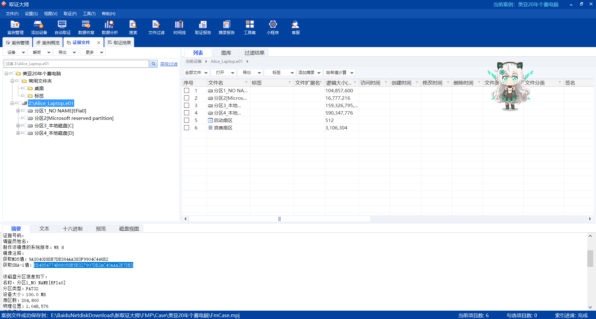
2、 Alice的笔记本计算机安装了哪个操作系统(Operating System)? -
A:Windows XP
B:Windows 7
C:Windows 10 Pro
D:Windows 10
E:Windows8
答案：C
3、 在Alice的笔记本，创建用户帐户的SID是什么
A:S-l-5-21-1017277147-4095180158-1226650532-1002
B:S-l-5-21-1017277147-4095180158-1226650532-1001
C:S-L5-2L1017277147-4095180158-1226650531」001
D:S-l-5-21-1017277147-4095180158-1226650531-1002
E:S-l-5-21-1017277147-4095180158-1226650533-1001
答案：B
4、在Alice的笔记本,用户的最后登录时间是什么时候？（本地时间）
A:2020-09-29 1436 hrs
B:2020-09-29 1437 hrs
C:2020~09-29 1439 hrs
D:2020-09-29 1440 hrs
E:2020/09/30 10:13
答案：E
5、在Alice的笔记本电脑中，最后登录的用户名称是什么？
A:Alice
B:Admin
C:user
D:Alice Chen
E Administrator
答案：A

6、Alice笔记本的名称是什么？
A：Alice-DJFFBL6
B:DESKTOP-DJFFBL6
C:Admin-DJFFBL6
D:Alicechen-DJFFBL6
E:Administrator
答案：B
7、在Alice的笔记本电脑中，最后登录的用户何时更改了Windows登录密码？ （当地时间）
A:2020-09-15 0220 hrs
B:2020~09-16 0221 hrs
C:2020-09-16 0223 hrs
D:2020-09-16 0222 hrs
E:2020-09-17 0224 hrs
答案：D
登录密码更改的事件为4724
8、Alice笔记本计算机的时区是什么？
A:UTC
B:DST
C:CST
D:CDT
E:HKT
答案：C
9、在Alice的笔记本,OS分区的文件系统是什么？
A:FAT
B:exFAT
C:NTFS
D:Linux
E:macOS
答案：C
10、 计算机上预设安装了什么浏览器？
A: Firefox
B:Chrome
C:Safari
D:Internet Explorer
E:Opera
答案:D
11、 在Alice的笔记本，哪个是最常用的浏览器？
A:Firefox
B:Chrome
E:Safari
D:Internet Explorer
E:Operd
答案：D
同上
12、 在Alice的笔记本，最常用的浏览器是什么版本？
A:Internet Explorer version 6
B:Internet Explorer version 7
C:lnternet Explorer version 11
D:Internet Explorer version 8
E:lnternet Explorer version 9
答案：C
把磁盘挂在，然后进去之后找到浏览器的文件夹，查看属性的详细信息
13、 在Alice的笔记本,Alice浏览了哪个在线商店的网站？
A:Sunnings, Apple 及 Microsoft
B:Microsoft, Apple 及 Fortress
C:Sunnings, Boardway 及 Fortress
D:Sunnings, Apple 及 Fortress
E:Sunnings, Apple 及 Boardway
答案：D
14、 在Alice的笔记本,受害人的信用卡号是什么？（HoPCKYI-电子邮件: shyl211@mtzh.gow.tw）
A:3405 06210621 7845
B:54J12210 01217741
C:1478 25831234 8899
D:75D561 1 为4 963R
E:1256 9638 5522 7894
答案:B
将邮箱附件导出来，CRD就是信用卡号
15、 在Alice的笔记本，受害人的信用卡CSC号码是什么？（何PCK卩孕子邮件: shyl211@mtzh.gow.tw）
A:123
B:321
C:112
D:121
E211
答案：C
同上

16、 除了上述在USB找出ZIP文件，请找出相同ZIP文件的路径？
A:Partition 3\Users\Alice\Desktop\Downloads
B:Partition 3\Users\Alice\Desktop\Temp
C:Partition 3\Users\Alice\Recent
D:Partition 3\Users\Alice
E:Partition 3\Users\Alice\Downloads
答案：E
说的意思就是电脑和USB里边有两个相同的压缩文件，我们需要找出来他们的路径
添加设备，加载USB镜像
这里有个坑，7z也被认定为是zip压缩文件的一种
直接跳转源文件看路径

17、zip文件的哈希值（sha-256）是多少？
A:59B88F8755ElF76107D6EE2134ED32BABBC91F0B44C7C0EE3850BBA74B7E88F6
B:8BF68F8755ElF76107D6EE2134ED32BABBC91F0B44C7C0EE3850BBA73B7EEE77
C:99F68F8755ElF76107D6EE2134ED32C91F0B44C7C0EE3850BBA74B7E59B8
D:89F78F8755ElF76107D6EE2134ED32BABBC91F0B44C7C0EE3850CCC74B7E59
E：88F68F8755ElF76107D6EE2134ED32BABBC91F0B44C7C0EE3850BBA74B7E59B8 答案：E
跳转源文件+哈希计算当前文件
18、ZIP文件的修改时间是多少?（当地时间）
A:2020/09/27 18:48
8:2020/09/01 18:47
C:2020/09/29 18:46
D:2020/09/24 18:45
E:2020/10/01 18:44
答案：C
19、USB驱动器在Alic龚记本计算机上的最后插入时间是何时？（当地时间）
A:2020-09-281800 hrs;
B:2020~09-271802 hrs
C:2020~09-29 1801 hrs
D:2020-09-16 1803 hrs
E2020-09-291202 hrs
答案：C
这个在usb镜像中的配置文件查看
20、应解压的ZIP文件内有哪些文件？
A:loglnx.txt, R3ZZ.txt
B:WhatsApp Image 2020-09-29 at 18.35.25.jpeg, WhatsApp Image2020-09-29 at
1837.47.jpeg
C:loglnx.txt
D:R3ZZ.txt
E:loglnx.txt, R3ZZ.txt, WhatsApp Image 2020-09-29 atl8.35.25.jpeg, WhatsApp Image 2020-09-29 at 18.37.47 .jpeg
答案：E
21、ZIP文件中发票的哈希值(SHA256)是多少=发票⑴ 名称：WhatsApp Image 2020-09-29 at 18.35.25.jpeg”
A:3EE491A38AB82AD19EDB2B7402DA31F52006C3B4B018F859A451B839878DF4C3
B:C391 A3RARR2AD19FDR 冗 74JDDA31FSKQ6C3R4R01 &FRS9A4S1 R839878D3EE4F4 C:34£391A38AB82AD19EDB2B7402DA31F52006C3B4B018F859A451B839878D8EE5 D:F4C391A38AB82AD19EDB2B7402DA31F52006C3B4B018F859A451B839878D3EE4
E:CCC381A38AB82AD19EDB2B7402DA31F52006C3B4B018F859A451B839878D3BB4
答案：D
这道题上来给我搞蒙了，因为上一题的时候我们没有打开图片嘛，
这里的发票就是zip文件里的图片，问第一张发票图片的哈希值
然后这里有一个坑，需要解压密码才能解压查看，那密码在哪呢，密码在检材的那几张图片里，
确定了之后跳转源文件哈希计算
22、 “ZIP文件中发票的哈希值(SHA256)是多少=发票⑵
名称：WhatsApp Image 2020-09-29 at 18.37.47.jpeg”
A:21F5CC2552A7337844B90F0AB5CDA85BF2F5A71A635E0D3B05731C95937D2DAF B:2DAFCC2552A7337844B90F0AB5CDA85BF2F5A71A635E0D3B05731C95937D21F5 C:20AFCC2552A7337844B90F0AB5CDA85BF2F5A71A635E0D3B05731C95937D21F5 D:DA2FCC2552A7337844B90F0AB5CDA85BF2F5A71A635E0D3B05731C95937D2LF5 £:A2AFOO2552A7337844B90F0AB5CDA85BF2F5A71A635E0D3B05ElC95937D21F5
答案：B
同理得
23、 Alice笔记本计算机上安装了哪种电子邮件软件？
A:Thunderbird
B:Lotus Notes
C：Nil
D:Outlook
E：Mailbird
答案：D
24、 Alice笔记本计算机上的电子邮件软件的版本是什么？
A:Thunderbird 78.0
B:Lotus Notes 11
C:Nil
D:Outlook2016
E:Outlook2013
答案：D
搜索outlook
25、Alice笔记本计算机登录电子邮件软件的电子邮件帐户是什么
答案：A
26、 Alice在上述电子邮件对话中获得了哪些数据/文件？
A:log1ns.txt, R3ZZ.txt
B:log1ns.txt
C:R3ZZ.txt
D:loglox.txt, R3ZZ.txt
E:loglnx.txt, 33Z2.txt
答案：A

2?、该电子邮件的发信者的电子邮件地址是什么？
E:bobcheung 123@gmail.com
答案：E

28、上述已收的电子邮件，发件人的IP地址是多少？
A:209.85.220.41
B:209.85.221.39
C:209.85.220.40
D:209.82.220.42
E209.58.220.43
答案：A
29、在笔记本,Alice的电子邮件地址是什么？
A:alicechen741@gma il.com
答案：A
同上送分的
30、除了Alice,还有其他龟子邮件地址与该骗局有关吗？
A:bobl23@gmaiLcom
C:bob cheungl23@gmail.com
答案：C
相关数据就是C给Alice发的
31、哪些人有AP和主脑之间的电子邮件记录？有文件传输吗？
A:Alice and Cole, reloglns.txt and R3ZZ.txt
B:Aliceand Tommy, re loglns.txt and R3ZZ.txt
C:Alice and Bob, re loglns.txt and R3ZZ.txt
D：Alice and Chris, re loglns.txt and R3ZZ.txt
E：Alice, Bob and Cole, re loglns.txt and R3ZZ.txt
答案：C
这道题题目就够坑的了，好在看着选项好猜
正好就是这俩人发的数据，后边就是数据文件
32、 在ZIP文件中，有多少受害人的信用卡数据被盗？
A:3
B:4
C:5
D:7
E:6
答案：D
打开数据文件，第二个里边有信用卡的相关信息(CRD)
33、已被黑客盗用其信用卡资料购买的受害者是谁？
A:TONGTOON
B:YUEN MING TIM
C:TSE KONG LON
D:TSE WONG YIN
E:LEEYOITEI
答案：C
这道题和前边的发票是对应的
34、被盗用的内容是什么？
A:Name, ccc code, credit card number
B:Name, ccc code, HKJD
C:Name, credit card number, aged
D:Name, credit card number, CSC
E:Nil
答案：D
还是分析那个附件
35、 Alice的手机型号是什么？
A:Model:LG-D855(G3 Global)
B:Model:LG-D755(G3 Global)
C:Model:LG
D:Model:LG-D855(G4 Slubdl)
E:ModekLG-BB55(G3 Global)
答案；A
从图片信息中就能锁定A和D
然后我是在手机大师里边判断出来选A
36、 Alice手机的操作系统版本是什么？
A:Android 4.0 (security patch=2015-12-01)
B:Android 5.0 (security patch=2O15-12-01)
C:Android 7.0 (security patch=2015-12-01)
D:Android 8.0 (security pateh= 2015-12-01)
E:Android 6.0 (security patch=2015-12-01)
答案：E
37、Alice手机的总存储空间是多少？
A:64
B:128
C:256
D:16
E:32
答案：E
38、在Alice手机，IMG-20200929-WA0002的创建时间是什么？(本地时间)
A:2020-08-29 1824
B:2020-09-29 1824
C:1970-09-29 1825
D:2020-09-29 1024
E:2020-09-02 2224
答案：B
39、在Alice手机，IMG-20200929-WA0004的创建时间是什么？(本地时间)
A:2020-09-29 1825
B:2020-10-29 1824
C:1970-09-29 1825
D:2020-08-29 1024
E:2020-09-25 1824
参案：A
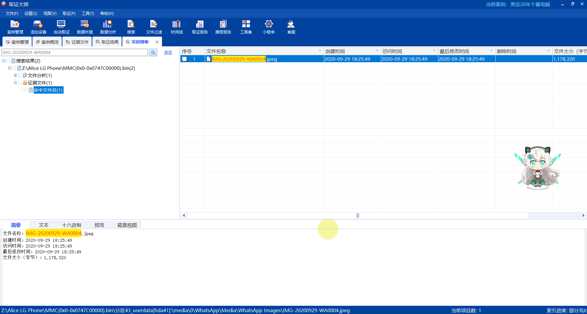
40、IMG-20200929-WA0002和IMG-20200929-WA0004的元数据和相机型号是什么？
A:Manufacturer: LG Electronics, ModeLLG-DD55
B:Manufacturer: Apple, Model: A1687
C:Manufacturer: LG Electronics, Model:LG-D855
D:Manufacturer: Samsung, Model: SM-N7105
E:Manufacturer: Ml, Nodel:MI8
答案：C
直接在手机大师里边找到图片然后导出来看详细信息
41、在Alice手机，预设浏览器浏览记录的文件在哪？
A:\Part ition43[hda4r\data\com.android.browser\data ba ses\browser2.db(Mobile
Forensics System V2)
B:\Partition40[hda41]\data\com.android.chrome\app_chrome\Defautt\History(Mobile
Forensics System V2)
C:\Partition41[hda41 \data\com.android.chrome\app_chrome\Default\History(Mobile
Forensics System V2)
D:\Partition42[hda41]\data\com.android.chrome\app_chrome\Defailt\History(Mobile
Forensics System V2)
E:\Partition 44 [hda41]\data\com.a ndroid.chrome\app_chrome\Default\History(Mobile
Forensics System V2)
答案：A
通常手机自带的浏览器包名就是com.android.browser
当然也可以根据路径去查找加以印证
42、存储Chrome浏览器历史记录的文件是什么？
A:\Partrtion40fhda41]\data\com.android.browsec\databases\b<Q»wser2.db(Nobile Forensics System V2)
B:\Partition41(hda41]\data\com.android.browser\databases\browser2.db(Nobile
Forensics System V2)
C:\Partition42[hda41]\data\com.android.browser\databases\browser2.db(^obile
Forensics System V2)
D:\Partiticn43[hda41]\data\com.android.chrome\app_chrome\Default\History(Mobile Forensics System V2)
E:\Partrtion44[hda41]\data\com.android.browser\databases’lbcQwser2.db(Mobile
Forensics System V2)
答案：D
43、Alice手机的Whatsapp ID和账户名称是什么？
B:62547937@s. whatsapp.net
答案:A
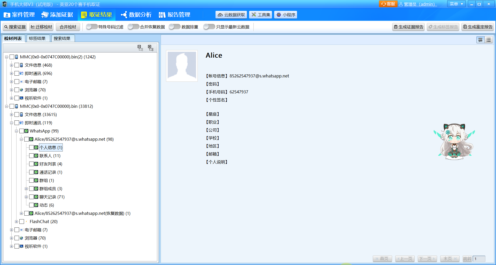
44、与Bob和Cole的最后WhatsApp的时间是什么？(本地时间)
A:2020/9/26 18:47
B:2020/9/24 10:25
C:2020/9/25 10:25
D:2020/9/24 10:20
E:2020/9/27 10:25
答案： A
45、主脑的名字是什么？
A:Chris 及 Tommy
B:Bob 及 Cole
C:Bob 及 Tommy
D:Alice 及 Tommy
E:Alic e 及 Chris
答案：B
根据前边的题推断，这个犯罪团伙主要的人是Alice、Bob和Cole
46、Alice, Bob和Cole之间的WhatsApp群组的ID和名称是什么？
A:62547937-1600392878@g.us “Big Big Club”
C:86162547937-1600392878@g.hk “Big Big Club”
D:62547937-1600392878@g.hk “Big Big Club”
E:85262547937-1600392878@g.us “Big Big Club”
答案：E

47、哪一个表，显示了聊天群组“BigBigClub”的创建时间？（本地时间）
A:Table:chat
B:Table:chat_list
C:Table:chat_group
D:Table:chat-group
E:Table:chatting_list
答案：B
分区43_userdata[hda41]\data\com.whatsapp\databases\msgstore.db
这个路径是该软件的相关设置
把这个数据库导出来然后用sqlite打开查看，根据选项挨个筛选就可以
48、聊天群组“Big Big Club”是什么时候创建的？（本地时间）
A:2020/09/17 10:34
B:2020/09/1810:34
C:2020/09/18 08:35
D:2020/09/18 07:34
E2020/09/18 09:34
答案：E
可以去在这个软件数据库中计算时间戳
也可以去聊天界面中查找
49、Alice是否曽经登陆whatsapp网站？如果有的话，她是在何时登入？所用的是什么浏览器？（提示:在移动取证图像上找到结果）（UTC+0）
A:NO
B:Yes. Windows Edge. 2020P9-29,18:43:44
C:Yes. Windows Edge. 2020~09-29,10:43:44
D:Yes. Firefox. 2020-09-29,10:25:44
E:Yes. Firefox. 2020-09-29,16:43:44
答案：C
直接在取证大师搜索结果里边搜索
50、Alice如何收到这笔钱？钱包地址是什么？
A:通过比特币钱包:lL6fKWpEYvUi8FeG6BnXqfhljoAg(nJAlhl
B:通过比特币钱包:2L6fKWpEYvUi8FeG6BnXqfhljoAgmJAlh2
C:通过比特币钱包:3A6fKWpEYvUi8FeG6BnXqfhljoAgmJAIhl
D:通过比特币钱包:666fKWpEYvUi8FeG6BnXqfhljoAgmJAlhl
E:通过比特币钱包:FF6fKWpEYvUi8FeG6BnXqfhljOAgmJAlhl
答案：A

51、”Deleted by the sender”的media_wa_type是什么？
A: 14
B:12
C:13
D:15
E：11
答案：D
这道题的题目说明有点绕，
“Deleted by the sender”加了个引号代指撤回的信息
media_wa_type数据库表中的某个列名
52、Alices手机的Wifi MAC地址是什么？
A:lntf0MacAddress=0D0AF58989FF
B:lntfOMacAddress=0012AF58989FF
C:lntfOMacAddress=OOOBF58989FF
D:lntf0MacAddress=110AF5B989FF
E:lntf0MacAddress=222AF589B9FF
答案：A
用原始数据搜索的功能
§3、Alice USB驱动器内的ZIP档案的密码是什么？(某些字符被刻意用*遮盖）
A:QP** !#80**
B:Qpzm!@****
C:Qp******@!
D：**98# *
E:**89#h *
答案：A
54、Alice USB驱动器内的哪一个程序是用作储存秘密数据?
A:mytracker.apk
B:c om_clea nmaster_m gu a rd_7.4.6_0 2_09_2 020.apk
C:crypto_aliens_bch_1.0.2_05_ll_2020.apk
D:de_schildbach_wallet_8,03_06_09_2020.apk
E：Messagesecure.apk
答案：E
带入搜索找到源文件导出，然后将APK拖进模拟器中下载
打开分析是一个图片隐写的手机版的一个工具
55、打开秘密讯息的密码是什么？（某些字符被刻意用*遮盖）
A:**89#h
B:Qpzm!#****
C:QP** **** @#
D:**98# *
E:** 8#9 *
答案：A
对应的上一题，我们利用上边的那个工具进行解密
揭秘需要图片和密钥，密钥在之前的图片中获取，图片参考56应该是在USB中找到
56、 USB驱动器内，其中一个档案的秘密讯息是什么？（某些字符被刻意用•遮羞）
A:Password is ****
B:Aliceisthe mastermind
C:****phone pw is ****
DrAlice and Bob are masterminds
E：Phone is ******* *****
答案：C
同上
57、 贴在笔记本计算器机上的密码有什么用途？
A:Alice笔记本电脑的Bitlocker密码
B:Alice»Z?ug邮动器的密码
C:Alice的电子银行密码
D:从文件恢复安全消息
E:Alice的手机密码
答案：D
这两个密码一个是用来解压非法数据压缩包的，一个是用来秘密密码解密的
58、 Alice USB驱动器内的档案有什么种类？
A:PNG,ZIP,APK,DOC
B:PNG,ZIF,APK
C:PNG,ZIP,APK,7Z
D:PNG,D0C,APK,7Z
E:PNG, ZIP, DOC, 7Z
答案：c
取证大师取证结果直接查看
59、Alice USB驱动器的哈希值（SHA-256）是什么？
A:4DFF94ED83F41C356B0588C2C21ECF563E9D8CA66ED6D97A!DS7C2629185528D
B:4DFF528D94ED83F41C356B0588C2C21ECF563E9D8CA66ED6D97A3D57C2629185
C:94ED83F41C356B0588C2C21ECF563E9D8CA66ED6D97A3D57C26291854DFF52 8D
D:528D94ED83F41C356B0588C2C21ECF563E9D8CA66ED6D97A3D57C26291854DFF
E:51BD94ED83F41C356B0588C2C21ECF563E9D8CA66ED6D97A3D57C26291854OFF
答案：D
送分的直接取证大师计算
60、在USB驱动器中找到的zip文件(Downloads.7z),它的哈希值(SHA-256)是什么？
A:59B88F8755ElF76107D6EE2134ED32BABBC91F0B44C7C0EE3850BBA74B7E88F6
B:8BF68FE755ElF76107D6EE2134ED32BABBC91F0B44C7C0EE3850BBA74B7E59BB
C:88F68F8755ElF76107D6EE2134ED32BABBC91F0B44C7C0EE3850BBA74B7E59 B8
D:88E68FE755E1F76107D6EE2134ED32C91F0B44C7C0EE3850BBA74B7E59B8
E：89F68F8755ElF76107D6EE2134ED32BABBC91F0B44C7C0EE3850BBA74B7E59
答案:C
61:在Alice的USB内，ZIP文件的最后修改时间是？
A:2020/09/29 18:46
B:2020/09/2718:46
C:2020/09/28 18:46
D:2020/09/24 18:47
E：2020/09/2816:48
答案：A
你的电子数据取证调查结果发现一个国际黑客组织牵涉这宗案件。经深入调查后，调查队伍相信该黑客 組织入侵了 一个名为Zello的本地网上商店官网，黑客组织也针对另一家网上商店Xeno发动网络攻击， 使其系统产生故障。调查期间发现三名男子：张伟华(Bob)、陶启礼(Cole)及罗俊杰(Daniel)疑与该案有关 。警方在捜査他们的住宅及公司后扣押了数十台电子设备。请分析电子敬据证据并重建入侵痕迹。
1、 Zello服务器的哈希值（SHA256）是什么？
答室：B
发现没有只有一个MD5
先对磁盘进行哈希计算解出来
2、 卷组是何时创建的？
A:2020/09/01 10:22
B:2020/09/02 10:22
C:2020/09/03 05:22
D:2020/09/03 16:22
E:2020/09/03 10:22
答案：E
查看配置文件/etc/lvm/backup/
3、卷组的名称是什么？
A:ubuntu
B:Debian
C:ubuntu-xp
D:Kali-vg
E:ubuntu-vg
答案：E
这个地方需要注意
卷组名称和系统名称不一样
4、物理卷的PVUUID是多少？
A:FF6neD-j49V-7o4g-Uugw-X
B:IF6neD-j49V-555g-Uugw-XP
C:EF6neO-j49V-704g-Uugw-X
D:IF6neQ-j49V-7Q4g-Uugw-K
E:F48neD-j49V-704g-Uugw-X
答案：D
这个地方 挂在起来很简单
pvdisplay
第五题 vgdisplay
5、卷组的VG UUID是什么？
A:AaJRmQ-tjaG-tmrX-Vnyu-xhS7-9zDttW
B:ZaRRnQ-S7Tp-tjaG-tmr-Vnyu-xhS7-92DnW
C:JJJRmQ-S7Tp-tjaG-xhS7-9zDttW
D:ZaJRmQ-S7Tp-tjaG-tmrX-Vnyu-xhS7-9zDttW
E:Cannot be found
答案：D
6、Zello服务器的Linux内核版本是什么？
A:4.1-generic
B:5.4.0-43-generic
C:5.4-48-static
D:6.4.0-generic
E:Cannot be found
答案：B
uname -a 查看全部内核信息
uname -r 查看linux内核版本
7、Zello服务器的操作系统版本是什么？
A:20.03 LTS
B:19.04.1 LTS
C:18.04.1 LTS
D:21.04.2 LTS
E: 20.04.1 LTS-
答案：E
8、 Zello服务器的主机名是什么？
A:zello
B:zello-group
C:zello-on
D:zello-server
E:server-zello
答案：A
9、 Zello服务器的机器ID是什么？
A:ff39cddcld794eb6888962aafal7ab28
B:ab23ff39cddcld704cb6S3S962aalal7
C:ff40cddcld794eb6888962aafal7ab281
D:df39cddcld794eb6888962aafal7ab2B
E:fdg39cddcld794eb6888962aafal7ab28
答案： A
记住机器ID的路径 /etc/machine-id
10、Zello服务器中使用的wordpress版本是什态
A:5.4.2
B:5.5.1
C:5.5.0.3
D:5.2.4
E: 2.5.5
答案：B
了解wordpress的路径
正如培训课上说的，更具有实战意义的做法：
1、仿真起来，看开放了哪些端口netstat -lntp
2、发现有apache2端口占用情况，然后再分析apache2的配置文件，apache2.conf里边查看有根目录
3、找到wordpress的配置
11、Zello服务器与之同步的主机名是什么?
A:NTP-server-based
B:N TP-host
C:Zello-server-host
D:NTP-server-host-zello
E:NTP-server-host
答案：E
这道题可以通过仿真查看历史记录来
或者可以查看历史命令的日志/root/.bash.history
12、Zello服务器的时区是什么？
A:Asia/Dhaka
B:Asia/HongKong
C:Asia/Bangkok
D:Asia/Yangon
E:Asia/Yekaterinburg
答案：B
13、有多少个本地用户已登录到Zello服务器?
A:1
B:2
C:3
D:4
E:5
答案：A
14、植入网络目录（Webdirectory）的网页壳层（WebShelJ）的哈希值（MD5）是什么？
A:FCOC5B5E56D56C6BBA6E1BAD595BECFD
B:FCOCECFD5B5E56D56C6BBA6E1BAD595B
C:CCFO585E56D56C6BBA6ElBAD595BFC0C
D:ED455B5E56D56C6BBA6E1BAD595BFC8C
E:ECFD5B5E56D56C6BEA6E1BAD595BFCOC
答案：E
这题有难度，题干也靠猜，题干的意思就是问注入此文件夹的木马的哈希
先把该文件夹下的文件全导下来，然后用D盾来识别哪些是木马
计算这两个的哈希值就可以了
15、\var\www\html\wordpress\net\2020\Login\index.php有什么作用？
A:下载木马程序
B:攻击目标服务器
C:上载档案到服务器
D:盗取资料
E:这是个普通页面
答案：D
打开分析代码
16、钓鱼网站伪装成什么网站？
A、Yahoo
B: Google
C:apple
D:Netflix
E:Spotify
答案：D
7、下列哪个IP对Zello服务器进行了蛮力攻击？
A:213.186.93.68
B:223.186.92.68
C:221.186.91.68
D:203.186.94.68
E:203.186.90.50
答案：D
查找apache2的日志
在/var/log/下面
将所有的日志导出来，然后用notepad在该文件夹下搜索
18、Zello Web服务器的URL是什么？
B: http://zello-onlineshop.com/
C:http://zello-onlineshop.sytes.net/
E:http://zello-onlineshops.com/
答案：C
19、 LVM2容器的第一个扇区是什么？
A:2101248
B:2100049
C:101250
D:5101246
E:210222
答案：A
要点击分区里边的容器
20、Zello服务器中LVM2容器的大小（以字节为单位）是什么？
A:21135367167
B:31135367168
C:3553536000
D:64615367165
E:42425367164
答案：B
同上
21、在Zello服务器以及Alice的装置中可以找到什么共同文件？
A:login.txt
B:inter2p
C:R3ZZ.txt
D:password.txt
E:Downloads.7z
答案：C
这部分给的是一个日志文件
22、2020年8月29日在Xeno服务器中发现的攻击类型是什么？
A:HTTPGET/POST Flood
B:NTP Amplification
C:Ping of Death
D:SYN Flood
E:SNMP Flood
答案：A
23、哪个IP地址在日志中条目数量最多?
A:14.102.184.0
B:156.145.65.5
C:14.200.184.10
D:14.24.144.219
E:45.133.180.5
答案：A
24、这个登录次数最多的IP地址，它访问最多的是哪个页面？
A:listen.icepush.xml
B:risk.xhtml
C:explorer.xhtml
D:login.jsp
E:listViewRisjs .xhtml
答案: B
25、这个登录次数最多的IP地址来自哪个国家或地区？
A:Hong Kong
B:Macau
C:China (Mainland)
D:South Africa
E:United states
答案:A
站长工具
26、这个登录次数最多的IP光址，总共有多少次成功登录？
A:28
B:18
C:51
D:0
E:80
答案：B
筛选状态码是200的、请求方式是POST的、url里边有login的
27、除DCoS之外，还可能涉及其他攻击吗?
A:SQL注入
B:命令注入
C:系统漏洞攻击
D:跨站脚本攻击
E:暴力破解攻击
答案:E
根据日志中有大量的访问报错记录
28、从该网站下载了多少数据？
A:大概20 MB
B:大概200 MB
C:大概 1 GB
D:大概 5GB
E:现有资料不足以推断
答案：E
日志文件里边没有涉及
29、Bob路由器的型号是什么?
A:BL -WR74ON
B:TL-WR74ON
C:Archerc 1200
D:archer c7
E:TP -WRB41N
答案：B
在分析报告里边可以找到
30、Bob家的IP地址是什么?
A:15.111.174.91
B:14.101.192.1
C:27.111.174.91
D:1.31.23.101
E:182.11.21.31
答案： C
31、使用路由器的装置的Mac地址是什么 -Alice？
A:00:BA:F5:89:89:FE
B:A4:4E31:EC24:00
C:60:67:20:3D:3B:OC
D:00:0A:F5:89:89:FF
E:OOAA:F5:82:89:FD
答案：D
用手机大师取证Alice的手机
32、使用路由器的装置的Mac地址是什么 -Cole?
同上
33、谁访问过Bob的家？
参考Bob家的路由器日志和前两道题
由、他们什么时候去过****Bob****的家？
34、他们什么时候去的Bob家

35、Bob笔记本计算机的哈希值SHA-1是什么?
36、笔记本计算机中安装了什么电子邮件程序？
*A:Big Email Sender*
*B:SuperEmail Sender*
*C:BuIk Email Sendei*
*D:Super Email Sent*
*E:Super Email Send*
答案：*B*
37、网络钓鱼电子邮件的接收者存储在什么文件？
*A:NETFLIX.htm.dump*
*B:NETFLIX.dump*
*C:NETFLIXS.dump*
*D:NETFLIX.htm.bak*
*E:NETFLIX.CONTAINER*
答案：*A*
38、在****Bob****的笔记本，有什么可疑APK及其功能？
****A:****检査虚拟货币的价格
****B:****虚拟专用网络
****C****盗取登入名称及密码
****D:****储存私人资料
****E:****作为一个洋葱浏览器
答案： A
带入关键词搜索，然后用模拟器打开观察
39、该可疑APK从什么网站获取资料?
A:http s://coina pk.io/vl/excha ngerate
B:http s://bitxoina pi.io/vl/exc ha nge.rate
C:http s://rest.coina pi.io/vl/exc ha iterate
D:https://rest. net/v1/exc ha ngerate5
E: https://online.coinapi.ioZv/exchangerate
答案：C
40、上述APK中发现的Bitlocker密钥是什么？
A:74785aaaa
B:741852963
C:72564529633
D:bob052963
E:522852693
答案：B

41、网络钓鱼网站的网页寄存的网站地址是什么？
A：hXlp://ze\a-on\inesYiop.syXes.neVwordpres5./neV1019/Login
B:http://zello-onlineshop.sytes.net/wordpress/net/2020/Login
C:http://zelloonlineshop.sytes.net/nets/2020/Login
D:http://zello-easyshop.sytes.net/wordpresss/net/2020/Login
E:http://zello-onlinemet. sytes.net/wordpres/net/2020
答案：B
这题想做出来必须把系统盘解密，刚好上一题得到了恢复密钥
1 | Repair修的意思 |
42、Bob的桌上计算机的哈希值（SHA-256）是什么？
A:86C740D5FB096A18CC419AF74D7A55389F28D7F8ElCE6FABD17371E66ElC2673 B:267340D5FB096A18CC419AF74D7A55389F28D7F8ElCE6FABD17371E66ElC86C7
C:267386C740D5FB096A18CC419AF74D7A553S9F28D7F8E1CE6FABD17371E66E1C
D:40D5FB096A18CC419AF74D7A55389F28D7F8EfE6FABD17371E66ElC267386C7
E：B6C740D5F8096A18CC419AF74D7A55389F28D7F8E1CE6FABD17371E66E1C2673
答案：A
43、Bob的桌上计算机的安装时间是几点？（本地时间）
A:2020/9/13 1:40:00
B:2020/9/15 3:40:00
C:2020/9/17 2:40:00
D:2020/9/15 5:40:00
E:2020/9/15 18:40:00
答案：B
44、Bob桌上计算机内发现的网络钓鱼脚本是什么？（某些字符被刻意用*遮盖）
A:d** nload.zip
B:**ternal.zip
C:i* t *r.zip
D:out**.zip
E:tex** rnal.zip
答案：C
45、该网络钓鱼脚本的功能是什么？
A:摧毁目标电脑
B:传播电脑病専
C:收集个人故据
D:发送勒索信息
E:自动化进行分布式拒绝服务攻击
答案：C
靠猜
其实考的是分析functions.php
这里需要用到手机大师，需要对检材进行解压，最后在backip
46、在Bob iphone,与Alice和Cole通讯记录的完整路径是什么？
A:FileList’User App List\Application/ChatStorage.sqlite
Table:ZWAMESSAGE(ZCHATSESSION:4)
B:File List\Download File List\Temp/group.net.WhatsApp.shared/ChatStorage.sqlite
Table:ZWAMESSAGE(ZCHATSESSION:3)
C:File List’User File List/gro up.net.WhatsApps.shared/ChatStorage.sqlite Table:MESSAGE(ZCHATSESSION:4)
D:File List\User File List\Applications/Group/group.netWhatsApp.shared/ChatStorage.sq lite Table:ZWAMESSAGE(ZCHATSESSI0N:4)
t List\Temp File List\Applications/Chat/group.retWhatsApp.share/ChatStorage.sqlite Table:SESSI0N:4)
曾案：D
47、Bob的iPhone的苹果ID是什么？
B: bobcheung@ya hoo. com
C:bo bcheung@gmail.com
E:bobcheungl23@hotmaillcom
答案：A
48、Bob的iPhone的IMEI是什么？
A:13421004458835
B:23421224458835
C:144410044508835
D:934218004458888
E:23421084450035
答案：A
49、Bob iPhone的时区设置是什么？
A:UTC +8
B:UTC+0
C:UTC -8
Rutc -10
EUTC + 6
答案：A
50、文件”VlP.txt”的完蹩路径是什么？
A:Bob/mobile/DCIM/Shared/AppGroup/group.whatsapp.WhatsApp.shared
/Message/Media〃5/c56255d0-a407.4341-afef-7bf5accc52f0.txt
B:Bob/Phone/Containers/Shared/AppGro up/group.net.whatsapps.WhatsApp.shared
/Message/Medla/85262547937-1600392878@g.us/c/5/1230.txt
C:Bob/Data/Containers/Shared/AppGro up/group.net.whatsapp.WhatsApps.shared /Message/Media/85262547937-160C392878@g.us/c/5/c56255dU-a407-4341-afef- 7bf5accc52i0.txt
D:Bob/Text/Containers/Shared/AppG?oup/group.net.,«hatsapp.WhatsA 叩.shared /Messages/Media/85262547937-1600392878<ag.us/c/5/c56255dO-a407-4341-afef-
E:Bob/mobile/Containers/Shared/AppGroup/group.net.whatsapp.WhatsApp.shared
/Message/Media/85262547937-160(‘392878@g.us/c/5/c56255d0-a407-4341-afef- 7bf5accc52f0.txt
答案：E
51、在Bob iphone,谁是“85262547937-1600392878@g.us“的聊天群组中的管理员？
A:Bob
B:Cole
C:Alice
D:Alice 及 Bob
E:Bob 及 Cole
蓉案：C
52、“85262547937-1600392878@g.us”聊天群组中有多少个附件？
A:6
B:4
02
答案：B
53、 Bob iPhone的Airdrop ID是什么？
*A;66E7BBDE9F69~*
B: Bob-airdrop-28455 C:67E7BBDE9F69-BOB
D:AirBob-66E7BBDE9F69
E:Bob-iP-66E7BBDE9F69
答案;A
54、 Bob的iPhone的採作系统版本是什么？
A:10,3.3
B: 10.2.1
C:12,3.1
D:13.3.2
E: 10.3.5
答案：A
55、Bob在2020-09-17的1451时访问的皿是什么？(UTC + 0)
A:https://www. apple.com
B:https://www.hackertestinghelp.com/ddos-attack-tools/ (Title:8 Best DDoS Attack Tools (Free DDoS Tool OfThe Year 2020))
C:https://www.textttestinghelp.com/ddos-attack-tool/amp/ (Title:8 Best DDoS Attack Tools (Free DDoS Tool OfThe Year 2020))
D:https://www.softwaretestinghelp.com/bmteforce-attack-tools/amp/ (Tit!e:8 Best DDoS Attack Tools (Free DDoS Tool Of The Year 2019))
E: https:〃 www.softwaretestinghelp.com/ddos-attack-tools/amp/ (Title:8 Best DDoS Attack Tools (Free DDoS Tool Of The Year 2020))
答案；E
56、Bob的SamsungS2的Android ID是什么？
A:72af229dlda3b3cd
B:71af229dlda3b3cdd
C:Bop72af229dlda3b3cd
D:72af229dlda3b3cd
E: Bob-72af229dlda3b3cd
答案：D
57、Bob的Samsung S2的操作系统版本建什么？
A:4.1.5
B:4.0.1
C:4.0.2
D:4.2.3
E:4.1.2
答案：E
58、Bob Samsung S2的时区设设置是什么？
A^ksza/Hong_Kong
B:Asia/Damascus
C:Asia/Baku
D^ksia/Bangkok
E:Asia/Tokyo
答案：A
59、“ bitcoin.PNG”的储存位置是什么？
答案：C
60、Bitcoin.PNG的哈希值(SHA-256)是什么?
答案：D
61、 Bob的Samsung S2的wifi mac地址是什么？
答案：D
62、 “userdata （ExtX） /Root/media/Download/APKTesting” 中的有多少APK档？
A：7
B:10
C:8
D:9
E6
答案：B
除去压缩文件其他的都是APK文件
63、Messagesecure.apk的哈希值（SHA-256）是什么？
答案：B
64、 私钥已在bitcoin.PNG中加密，私钥是什么？
A:NpqGc6yaEjPd7NgBBRz9yUAf447Ei74K8rwuxoia8paBjzDNKzZU
B:KzZUc6yaEjPd7NgBBRz9yUAf447Ei74K8rwuxoia8paBjzDNNpqG
C:NpqGKzZUc6yaEjPd7NgBBRz9yUAf447Ei74K8rwuxoia8paBjzDN
D:c6yaEjPd7NgBBRz9yUAf447Ei74K8rwuxoia8paBjzDNNpqGKzZU
E:c6yaEjPd7NgBBRz9yUAf447Ei74K3rwuxoia8paBjzDNNpqG
答案：B
这道题注意坑，联系上边的图片隐写APK和Bob电脑图片上的密码
65、 apk文件 “flash_chat” 的哈希希（SHA-256）是什么？
A:479aadba030b9flb0165760881eaeed48330cb3dccc807fe482985a8370b0d5b B:041a731249fa7bbaebd88651e0f5:i2c4c3069c6ff8924b80579a2bl60e387340
C:ae572ebla59e9a8dc25ad02cl5761532658747979e63ad356ec5b9clf623b4bf
D^eccf8ab9bf99a73df864c42ba813973d802c242a74cafeafac946ed43433d62
E:fea06d7dc0R152cR153c99ef4e654b6R3ba02f3679193fflfd991625cababl0f
答案：B
这道题也有坑，这道题你是在Bob的手机里边搜不到的
因为前边的线索Bob、Alice和Cole联系比价密切，在Alice的手机镜像里找到的
这里还要注意的是有些apk安装之后会改变名字，不一定是<原名>.apk
所以正常的搜索是不管用的，直接去APP的文件夹下找
然后放到模拟器下验证
66、哪个文件包含“flash_chat”聊天记录？
答案：8
像这种小众的聊天工具，取证软件无法自动化识别，但聊天记录一般都在数据库中，找数据库的文件夹
把这四个都导出来用数据库查看一下，发现是第一个
67、从flash_chat 找到的Bob的windows密码是什么？
答案：C
这个难度较大
打开之后发现记录没有给转码，自己挨个查看，在第12个发现符合条件的密码
68、消息的消息号码(Message ID)是什么？
A:G2iytNuzajD4YUlMGVQz
B:0x04CM9o69pmKByxwnRj
C:j77xBc4hi8En7FTCPrDH
D:diPO4Huk2aymv2ScHubl
E:8XL2u5jlff5jlsKzGGvg
答案：B
69、Fash_chat消息ID “ aGqBn6Bxutv24SQvrBL”中的密码是什么？
同上
70、从Bob iMAC桌面名为Wallet.dat的档案中可以取得以下那一个比特币地址?（某些字符被刻意用•遮盖）
答案：D
71、从Wallet.dat档案中取得的比特币地址，那一个有接收及传送过比特币？
答案：A
72、以下哪一个比特币接收或传送交易的哈希值与上述的比特币地址有直接关系？
答案:C
73、上述的比特币交易中所涉及多少比持币？
A：0.0L2822M BTC
B:0.01459400 BTC
C:0.00175178 BTC
D:0.00234500 BTC
E:以上都不对
答案：B
74、 Bob iMac数据磁盘的哈希值（SHA-256）是什么？
75、Cole桌上计算机的哈希值（SHA-1）是什么？ A:0D00A8A853B9001A9FC7BF89D9FBBA790C065CE2
B:0D22A8A853B9001A9FC7BF89D9FBBA795CE2
C:A«A«53B90（nA9FC7BFR9D9FBBA790C0fi5CE20D00
D:5CE20D00A8A853B9001A9FC7BF89D9FBBA790C06
E:5CE2A8A853B9001A9FC7BF89D9FBBA790C060D00
答案：A
76、 Cole桌上计算机的用户名是什么？
A:ADMIN
B:COLE
C:COLE-DESKTOP
D:COLE-PC
E:COLE-PC-841315
答案：B
77、 在Cole的桌上计算机中发现了多少潜在的受害者？
A:100
B:150
C:200
D:250
E:300
答案：C
一般会把一些受害者的资料整理在某个文件里，可以查看近期访问的文件或者近期浏览器历史查看
打开发现是乱码，复制文件名搜索取证结果打开是正确的
78、潜在受害者的数据被储存在哪里?（某些字符被刻意用•遮盖）
A:Partition 3\secret\doc**ent.txt
B:Partition3\secrets\c”tomer.txt
C:Partition 3\secrets\vi”.txt
D:Partition 3\secrets\vi**.zip
E： Partition 3\sec*ets* ips.doc
答案：C
79、 预设浏览器何时安装？
A:2019-10-01
B:2019-12-01
C:2019-12-07
D:2020-09-24
E:2020-09-28
答案：C
找他路径然后查看安装日期
80、Cole桌上计算机上预设安装了什么浏吳器？
A:Chrome
B:Edge
C:Firefox
D:lntemet Explorer
E Opera
答案：D
其实IE和ME是一个，只是版本不同，一般都选IE
81、上述储存浏览记录的默认浏览器 ,该文件档案的类型是什么？
答案：B
82、入侵Zello的证据文件是什么？
A:Event log
B: Email
C:Pretech
D:Ransomenote
E:WebCacheV01.dat
答案：E
联系41题，http://zello-onlineshop.sytes.net
拿到这个网址，然后在Cole源文件里搜
83、受感染网站的网址是什么？
R: www.gnoglp.rnmCiwww.vmware.com
E: http://zello-onlineshop.sytes.net
答案：E
同上
84、Cole桌上计算机上的DDoS勒索字条是什么？（某些字符被刻意用*遮盖)
A:liccnsc.txt
B:Ransome Note of “OS.txt
C:Ransome Note of ,*OS.doc
D:edb.log
E:”inst.log
答案：B
85、在Cole桌上计算机上发现的DDoS勒索字条中，比特币钱包地址是什么?
A:lL6fKWpEYvUi8FeG6BnXqfhljoAgmJAIhl
B:2A6fKWpEyvUiSFeG6BnXqAAljoAgmJAlbJ
C:3F6fKWpEYvUi8FeGllnXqAAljoAgmJAlhl D:5C6fKWpEYvUi8FeG6BnXqAAljoAgfJAlhl EAlhlKWpEYvUi8FeG6BnXqfhljoAgmJlL6f
答案：A
同上
86、Cole笔记本计算机的哈希值（SHA-1）是什么？
A:2EF559C89F2C5E6A2E02CFF13DBD61E423B89CD2 —
B:2EF59CD259C89F2C5E6A2E02CFF13DBD61E423B8 —
C:59C89F2C5E6A2E02CFF13DBD61E423B82EF59CD2 ~
D:8CO259C89F2C5£6A2£02CFn3DBD61£423BS2£F5
E:9CD259C89F2C5E6A2E02CFF13DBD61E423B82EF
答案：E
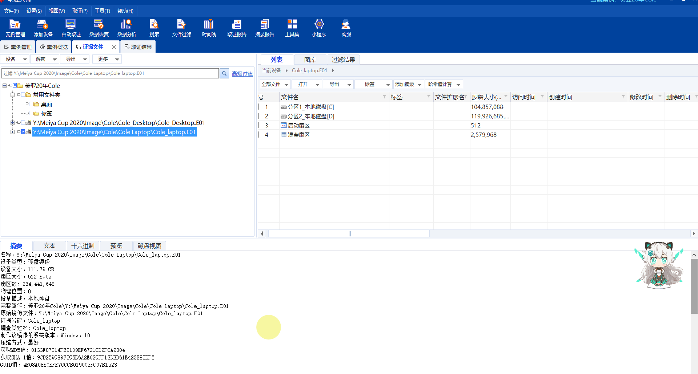
87：Cole笔记本电脑有多少个用户账号？
答案：B 3个
88、当前登录用户帐户的用户名是什么？
答案：C Cole
同上
89、 在Cole笔记本的随机存取记忆体中，是什么Windows配置文件？
A:Win7SPlx64
B：Win7SPlx64_25000
C:Win7SP2x64
D:Win2008R2SPlx64_24418
E:Win2008R2SP2x64
答案：A
用给的内存文件取证
90、 用户密码的前5个字符是什么？
A:12345
B:78945
C:passw
D:P@s$w
*E*azws*
答案：B
volatility -f bb.raw –profile=Win7SP1x86_23418 hashdump
然后去cmd5解密
91、 计算机中可建的txt文件的名称是什么？
A:abctxt
B: costomer.txt
C:secret-txt
D:vips.txt
E:No suspicious file was found
答案:D
带入去搜
92、可疑TXT文件曾出现在哪个路径？
A:C:/Users/Cole
B:C:/Users/Cole/Desktop/
C:C:/U sers/Cole/Desktop/Trade
D：E:/USB16GB
E:No suspicious file was found
答案：B
带入去搜源文件
93、 是否有任何证据表明该文件已执行？
A:是的，因为与此文件相关的Ink文件在内存偏移堕(Memory Offset) 0xcd40e382中找到
B:是的，因为与此文件相关的Ink文件在内存佩移量(MemoryOttset)0xll7a86230中找到
C:是的，因为在Cole\AppData\Roaming\Microsoft\Windows’Recent’中找到了与此文件相关的 Ink文件
D:找不到执行证据，因为没有与txt文件相关的預取文件;E:找不到可疑文件和Ink文件
答案：C
同上
94、 以下哪个与上述可疑txt文件相关的发现是正确的？
A:在创建可疑txt文件之后，创建/访问了另一个txt文件 栏在创建另一个txt文件之后创建/访问该文件
dcole使用Microsoft Word打开文件
D;无法确定与文件相关的时间事件
E:该文件是通过内部网络ip下载的
答案：A
发现这个文件可能是走的某个共享文件夹
去查这个共享文件夹
95、根据系统时间，Cole在2020-09-18 01:01:08 UTC +0000 左右用笔记本计算机做了什么？
A:他创建了一个新的xls文件
B:他从USB复制了一些文件
C他打开了一些txt文件
D:他删除了一些文件
E:没有
答案：D
先把时间换算为本地时间，根据系统区时，本地时间为2020-09-18 09:01:08
去搜取证结果
发现这个文件有删除功能
96、FTKImager.exe 的 PID 是什么？
97、FTKImager.exe的父应用程序是什么？
同上
98、 FTK1mager.exe使用什么DLL?
导出来用txt搜
99、 MpCmdRun.exe的PID是什么？
100、以下哪个与MpCmdRun.exe相关的项目是正确？
同上
101、上次启动后，笔记本计算机连接的外部IP是什么？
A:31.12.82.1
B:40.10261.1
C:218.112.79.1
D:218.112.172.8
E:未连接/未连接到任何外部IP
答案：E
102、 上次启动后，笔记本计算机连接的网络驱动器路经是什么？
同上没有连接任何外部IP
103、Cole公司的一位客户有一封电子邮件m * b * @ms **.z * *. * *.tw,可以在Cole的笔记本计算机中找到此数据吗？
这题离谱，搜索不到，原始数据得跑半个多小时，baby的我直接看了内容详解
其实查看vips.txt这个可疑文件就好
104、收到上述电子邮件的客户名称是什么?
chan ye=陈宜
105、属于上述客户的电话号码是什么？（某些字符被故意用•遮盖）
106、上述客户可能居住的区域是什么？
tin shui wai
107、Cole的PI的哈希值（SHA-256）是什么？
108、Cole PI装置的操作系统是什么？
109、操作系统是什么版本?
110、装置的文件系统是什么？
111、操作系统的时区是什么？
113、Cole PI装置中的儿童色情物品的创建时间是什么？
A:2020/09/15 11:21
B:2020/09/15 17:21
C:2020/09/15 18:21
D:2020/09/16 19:21
E:2020/09/15 20:21
答案：B
114、ColeNAS的哈希值(SHA-256)是什么?
115、 儿童色情数据存放在哪里？
116、 设备中现有多少儿童色情数据？
同上
117、 Cole NAS装置中的儿童色情物品的创建时间是什么？

118、在Cole手机，的用户个人资科是什么？
B:co\eiung99@gmailcom
C:cole909@gmaiLcom
Dxolefu ng909@gmail.com
Exolefu ng999@gm a ilxom
答案:D
119? Cole的手机上有社交媒体帐户吗？如有，那足什么？
A:63766465@s. what sapp.net
B:85263766465@&whatsapp.net
E:COLE-63766465@s.whatsapp.net_
答案：B
120； Cole与Bob和Alice在同一个小组中进行过交流吗？它是什么？
A:是的，在whatsapp组ID中的群聊消息：85262547937-1600392878@&us
B:是的，在whatsapp組ID中的群聊消息：85262547937-1600392878@g.hk C:是的，在whatsapp組ID中的群聊消息：85252547937-1600392878@.us
D:是的，在whatsapp組 1D中的群聊消息：6254793,1600392878色g.us
E:不，他们在Cole的设备中找不到公共聊天组 一
答案：A
121、Cole手机的Android ID足什么？
A、626a98cb2bb9G5ec
Bi606a9Scb2bb965cc<3
C:626a98cb2bb965ec D:65ec626a98cb2bb9
E:626aa8cb2bb965ec626a
答案：c :
122、已安装的WhatsAppAPW件的哈希佰（SHA-256）是什么？ 一
A：06fa2cce8O923de8646f335b72dlfbO6397343a5b7242b£3P72627c7S4>lbb3J8
B:8elb06fa2cce80923de8646f835b72dlfb06a97343a5b7242bc3972627c7b318 C:8elbb31806fa2cce80923de8646f835b72dlfb06a97343a5b7242bc3972627c7 D:b31806fa2cce80923de8646f835b72dlfb06a97343a5b7242bc3972627c78elb
E：b4l8Q6fa2cce80923de8E46f835b72dHb^6a93343a5bUgba972€27c78elb 普案：D 一
123、列出Chrome的五个“关蹙词搜索”。 一
A:”bulk mailer, ddoscreator, fortress online, parknshop, GitHub malware” B：”bulk mail, bulk mailers, ddos creator, fortress online, bitcoin”
C:”bulkmaM, bulk mailer, ddos creator, fortress online, bitcoin”
D:”bulk mail,bulk mailer, ddos creator, parknshop, GitHub malware”
E’”fortress online, bitcein, apple, packn^hop, GiftHub mabMare” 答案：A 一
124、 在鄭里可以找到“Cole的电话”的通话记录？ 一
A:Table:call
B:Table:calls
C: 丁able: contact
D:Table:contacts
E:Table:sms
答案：B 一
125、 2020-09-01 至2020-09-30之间，“Cole” 收到了多少条SMS讯息？
A:?
B3~
D:5
E6 答案：A
| 126、在Cole的-whatsapp-联络人中，有多少用户正在使用“whatsapp’ |
|---|
| A:2 |
| B：3 |
| C:4 |
| D:5 |
| E6 |
| 答案：c |
| 127、Daniel的桌上计算机的哈希值（SHA-256）是什么？ |
| A:E588564CA7AAA5352F6A1215A9F1FBE4 |
| &FBE4564CA7AAA5352F6A1215A9F1E588 |
| C:01DD40CF28603F421F3A09CD38F1C8AA40A2AC4BFB46ECF8299C38CE6AE44E05 |
| D:O7DD4OCF286O3F421F3AO9CD38F1C8M4OA2AC4BFB46ECF8299C38CE6AE44ED5 |
| E:4ED54OCF286O3F421F3AO9CD38F1C8M4OA2AC4BFB46ECF8299C38CE6AE4O7DD |
| 答案:D |
| 128、该桌上电脑操作系统存储在哪个分区上？ |
| 129、在桌上计算舞机中找到Daniel的电子邮件地址定什么？ |
| 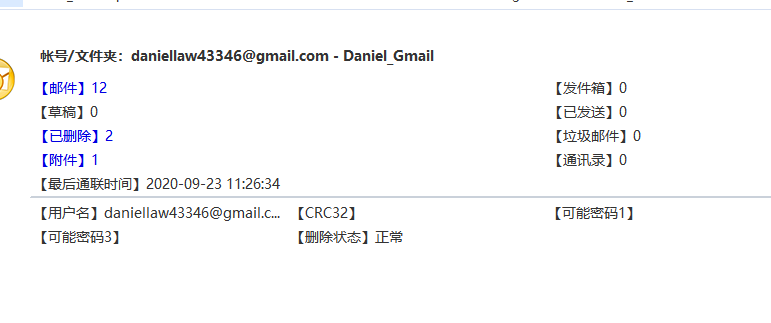 |
| 130、该恶意软件感染源是什么？ |
| 结合选项来看 |
131、在Daniel的桌面上发现了什么恶意软件？
其他的都搜不到
132、该恶意软件的哈希值(SHA-256)是什么？
A:508972AFE67F7991F13212ElFE517F82BDC032DE0F5CDF15FDF641EDlFDD233D B:5089E67F7991F13212ElFE517F82BDC032DE0F5CDF15FDF641EDlFDD233D72AF
C:72AFE67F7991F13212ElFE517F82BDC032DE0F5CDF15FDF641EDlFDD233D5089 D:77AFB67F7991F13212ElFE517F82BDC032DE0F5CDF15FDF641EDr=DD233D50B9 己E:67F7991F13212E1FE517F82BDC032DE0F5CDF15FDF641ED1FDD233D508972aF
答案：C
上一题查看的是zip文件，知道文件名了之后查找这个恶意软件

133、该恶意软件的功能是什么？
导出来用火绒查杀，Trojan 木马
134、Daniel的MacBook计算机的哈希值(SHA-1)是什么？
135、 Daniel的MacBook计算机中有多少个分区？
两个
这一部分其实是手机备份文件取证，但因为iphone的版本问题（有点老），他的备份文件不是分别整理好的，所以需要手动整理成第二张图的格式
136、Daniel的iPhone的操作系统是什么版本？
A:12.0.0.1
而.3.2
C:12.4.7
D：12.5.1
巳 13.4.6
答案：c
A:22:9a:be:c4:99:7b
B:44:9a:be:c4:99:7d
C:50:9a:be:c9:99:7d
Dg4:9a:be:c4:99:7d
巨 d:64:9a:be:c4:99
政：D
138、Daniel的iPhone的IMEI是什么？
A:256960065058545 一
B：900960065055854 —
畐59000065055845 _
际56960065055845 一
E：456960065505845
答案：D
139、iPhone上次连接WIFI的SSID是什么？
A:Netgear
B:Netgear_5G
C:Net24-5G
D:Netgear24_4G
E:Netgear24_5G
答案：E
140、根据调查结果，以下哪项关于Danie的选项是正确的？
A:Daniel 认识 Alice
B:Cole入侵了 Daniel的计算机
C:Daniel知情地入侵了 Xeno的服务器
D:Daniel是犯罪团伙的一员
E:以都不对
答案：E
个人资格赛-案情介绍
1 .何源是一名25岁的客服人员，在一间电讯公司工作，何源在用iPhone手机在政府建筑物中 偷拍车牌期间被警员截停，盘问期间警员检查手机相册发现多张车牌图片，何源情绪紧张，趁警员不被，抢过手机丢入车流，被完全损毁。行为十分可疑，警方于是展开调查。审讯期间何源承认利用自己的职权的便利，登入公司储存客户数据的服务器，非法取得一些政府人员的个人资料， 例如姓名，车牌号码，电话等等，再将这些数据出售。
2.警方检获何源个人计算机，以及何源公司计算机（由于何的公司不允许警方检取整台计算机，人员只能取得内存数据档案（memory image）以作分析）。现你被委派对何的计算机进行电子数据取证，还原事件经过。
你会获得何源（YuanHe）计算机的硬盘镜像文件”win2.E01”以及何源公司计算机的内存数据档案 “memdump.mem”。根据这两个镜像文件的内容，请回答以下问题：
| 1 | 何源的个人计算机硬盘已成功被取证并制作成镜像(Forensic Image),下列哪个是镜像的SHA1哈希值？ | |
|---|---|---|
| A. | 6891d022c7e6fe81dc8ba2160e1ab610891596d3 | |
| B. | 3e57817ea6263bc2c696a3455cc96381 | |
| C. | ed43de631a56dd2c8bac4abbd3882c86 | |
| D. | dd32beac5ef2cd1cac06bdd8b5e88cbc4eb9^de9 | |
| E. | 48a45c39da458f3cadd92017e0247454dc8bff66 |
A
| 2 | 在何源的个人计算机 | 硬盘中包含哪个操作系统(Operating System) ? |
|---|---|---|
| A. | Windows 7 | |
| B. | FAT32 | |
| C. | Windows 10 | |
| D. | KaIi Linux | |
| E. | NTFS |
C
1 | windows目录下各个文件夹的作用 |

| 3 | 何源个人计算机的文件系统(File System)是什么？ |
|---|---|
| A. | FAT16 |
| B. | FAT32 |
| C. | W i ndows 7 |
| D. | NTFS |
| E. | Windows 强 |
D
| 4 | 在何源的个人计算机中，你能找到操作系统分区的总容量吗(单位：字节byte) ? |
|---|---|
| A. | 492, 083, 081,216 |
| B. | 105, 685, 986, 874 |
| C. | 386,908, 999, 680 |
| D. | 105,174, 081,536 |
| E. | 492,594, 986, 554 |
A
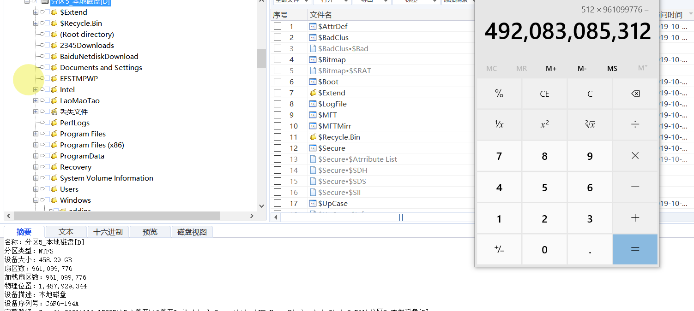
| 5 | 在何源的个人计算机中，操作系统分区的$Bitmap的起始物理扇区位置(Physical Sector Number)是多少 |
|---|---|
| A. | 5.683.328 |
| B. | 6.170.040 |
| C. | 7.026.176 |
| D. | 8.498.304 |
| E. | 9.168.216 |
E
| 6 | 在何源的个人计算机中，请问操作系统的安装日期是？（答案格式一“世界协调时间”：YYYY-MM-DD HH:MM UTC） |
|---|---|
| A. | 2019-10-16 04:44 UTC |
| B. | 2019-10-17 16:25 UTC |
| C. | 2019-10-16 10:12 UTC |
| D. | 2019-10-18 02:13 UTC |
| E. | 2019-10-18 09:14 UTC |
A
1 | 注意时区转换 |
| 7 | 在何源的个人计算机中，每个扇区（Sector）包含多少个字节？（单位：byte） |
|---|---|
| A. | 512 bytes |
| B. | 1024 bytes |
| C. | 2048 bytes |
| D. | 4096 bytes |
| E. | 8192 bytes |
A
1 | 常识 |
| 8 | 在何源的个人计算机中，操作系统的时区是哪个时区？ |
|---|---|
| A. | Eastern Standard Time (GMT-05:00) : US and Canada |
| B. | Pacific Standard Time (GMT-08:00): Tijuana |
| C. | Korea Standard Time (GMT+09:00): Seoul |
| D. | GMT Standard Time (GMT): Dublin, Edinburgh, Lisbon, London |
| E. | China Standard Time (GMT+08:00): Bei j ing, Chongqing, Hong Kong, Shanghai |
E
| 9 | 在何源个人计算机的操作系统中，下列哪个是计算机的主机名？ |
|---|---|
| A. | DESKTOP-JW47K02 |
| B. | HEYuan-WIN1 |
| C. | HEYuan-WIN2 |
| D. | DESKT0P-SM22M96 |
| E. | DESKT0P-WE23K24 |
D
| 10 | 在何源的个人计算机中，以下哪一个是用户“He Yuan”的SID? |
|---|---|
| A. | S-1-5-21-1551135561-2581751248-1803739423-1001 |
| B. | S-1-5-21-1551135561-2581751248-1803739423-1000 |
| C. | S-1-5-21-1551135561-2581751248-1803739423-500 |
| D. | S-1-5-21-1551135561-2581751248-1803739423-501 |
B
| 11 | 在何源的个人计算机中，下列哪个USB移动储存装置（U盘）曾被分配为’E’磁盘分区代号（Drive Letter） ? |
|---|---|
| A. | K i ngston DataTraveler 3. 0 USB Device |
| B. | SanDisk Transcend USB Device |
| 0. | Samsung Portable SSD USB Device |
| D. | WD My Passport 3.0 USB Dev i ce |
| E. | Seagate Flash Disk USB Device |
A
| 12 | 在何源的个人计算机中，用户“He Yuan”曾经在挂载为“E”盘的USB移动储存装置中访问过一些文件/文件夹，以下哪一个不是？ |
|---|---|
| A. | E:\美国恐怖故事 |
| B. | E:\New Text Document, txt |
| C. | E:\CONFIDENTIAL. doc |
| D. | E:\PycharmProjects |
| E. | A. B, C, D |
C
1 | 挨个找，或者挨个带入检索 |
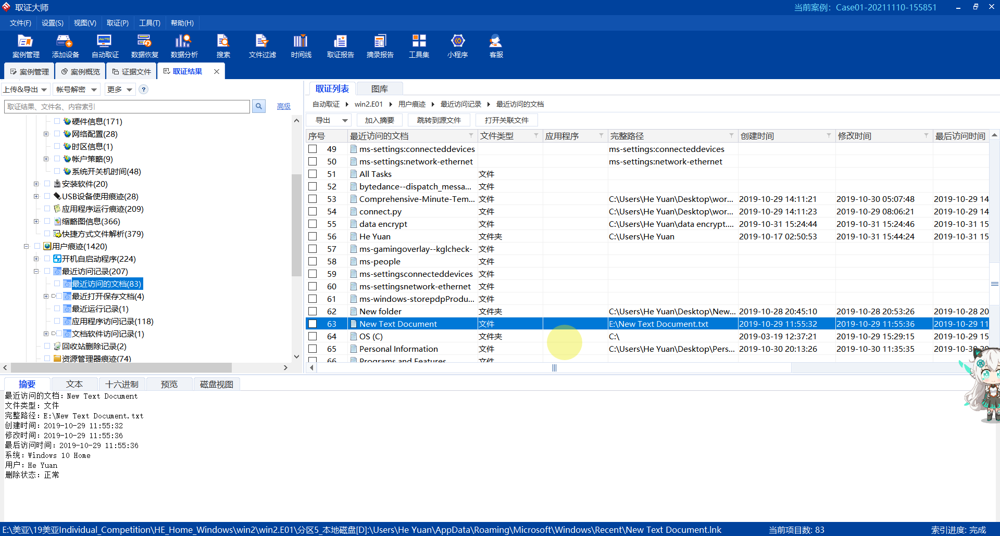
| 13 | 在何源的个人计算机中，用户“He Yuan”最近在本机上访问过一些文件，以下哪一个不是？ |
|---|---|
| A. | Samp Ie Project Plan, doc |
| B. | URGEINT. doc |
| C. | connect, py |
| D. | 美国恐怖故事01. mp4 |
| E. | Comprehensi ve-Minute-TempI ate. doc |
B
1 | 思路同上 |
| 14 | 在何源的个人计算机中，以下哪一个是程序“VERACRYPT.EXE”的运行次数？ |
|---|---|
| A. | 1 |
| B. | 2 |
| C. | 3 |
| D. | 4 |
| E. | 6 |
C
| 15 | 在何源的个人计算机中，在程序“VERACRYPT.EXE”运行时，以下哪个dlL文件并没有同时被加载？ |
|---|---|
| A. | C0MDLG32. DLL |
| B. | CRYPT32. DLL |
| C. | SECUR32. DLL |
| D. | CRYPTSP. DLL |
| E | ENCRYPT. DLL |
| 16 | 在何源的个人计算机中，用户“He Yuan”的桌面墙纸（Wall paper）背景是什么颜色？ |
|---|---|
| A. | 黑色 |
| B. | 灰色 |
| C. | 蓝色 |
| D. | 红色 |
| E. | 绿色 |
C
| 17 | 在何源的个人计算机中，以下哪个文件在电脑power off的时候仍然拥有内存的内容？此文件具有与电脑内存（RAM）相似的大小并保存在根目录。 |
|---|---|
| A. | WIN386. SWP |
| B. | HIBERFIL. sys |
| C. | PAGEFILE.SYS |
| D. | NTUSER. DAT |
| E. | SWAPFILE. SYS |
B
根据大小和存放路径，带入在取证结果搜索
| 18 | 在何源的个人计算机中，以下哪个database文件存有此操作系统的timel ine痕迹？ |
|---|---|
| A. | SRUDB.dat |
| B. | Windows.edb |
| C. | Spartan.edb |
| D. | ActivitiesCache.db |
| E. | Thumbs.db |
D
| 19 | 在何源的个人计算机中，曾被分配过的ip地址是？ |
|---|---|
| A. | 147. 8.177. 224 |
| B. | 147.10.188. 23 |
| C. | 192.168. 0. 110 |
| D. | 10.12. 9. 214 |
| E. | 192.168. 1. 2 |
A
| 20 | 在何源的个人计算机中，用户” Administrator”的Internet Explorer浏览器的start page是以下哪 个？ |
|---|---|
| A. | http://go. microsoft. com |
| B. | https: //www. b i ng. com |
| C. | http: //www. ba i du. com |
| D. | https://www. google, com |
| E. | http://hao. 360. cn |
E
| 21 | 在何源的个人计算机中，你是否可以找到何源iPhone手机的线索。关于他的手机，以下哪条信息不正 确？ |
|---|---|
| A. | IMEI： 359461082062689 |
| B. | Serial Number： F17V1L6EHG70 |
| C. | Apple ID : heyuan516@icloud.com |
| D. | MS I SDN: 85259114189 |
| E. | 无 |
C
| 22 | 用户“He Yuan”在WhatsApp上与谁进行了对话？ |
|---|---|
| A. | Keanu Reeves |
| B. | Michael Nyqvist |
| C. | Peter Wang |
| D. | John Manager |
| E. | Michael Brown |
D
| 23 | 在手机联系人中，Anthony Chung的手机号是多少？ |
|---|---|
| A. | +85252018664 |
| B. | +85257025241 |
| C. | +85257024765 |
| D. | +8613890274976 |
| E. | +8613928749036 |
A
| 24 | He Yuan在iPhone自带的Safari浏览器中搜索过一些关键词，以下哪一个不是？ |
|---|---|
| A. | 野狼d i sco |
| B. | 拜佛过人professor |
| C. | engineer’s day 1024 |
| D. | Programmer’s Day no bug |
| E. | poptown 攻略 |
B
| 25 | 用户“He Yuan”的WeChat ID是多少? | |
|---|---|---|
| A. | HEYUAN516 | |
| B. | wx id_9y8cs5hdi n2 i 15 | |
| C. | wxid_9y8cs5hdin2i14 | |
| D. | wxid_9y8cs5hdi n2 i13 | |
| E. | wxid_9y8cs5hdi n2 i12 |
E
| 1 | 26 | 在WeChat的多个聊天记录中，用户”He Yuan”没有聊到过哪个话题？ |
|---|---|---|
| A. | 与中介谈买房 | |
| *X* | B. | 与老板谈洗钱 |
| c | 与黑客谈交易 | |
| D. | 与网贷谈借钱 | |
| E. | 与朋友谈炒房 |
| 1 | 27 | 从WeChat中的一个聊天记录中可知，用户“He Yuan”持有多少人的数据？ |
|---|---|---|
| A. | About 500 | |
| B. | About 1000 | |
| *X* | C. | About 2000 |
| D. | About 3000 | |
| E. | About 5000 |
| 1 | 28 | 接上题，Hacker最后要支付多少Bitcoin给He Yuan? |
|---|---|---|
| A. | 0. 002312 | |
| B. | 0. 066666 | |
| C. | 0. 036354 | |
| *X* | D. | 0. 014594 |
| E. | 0. 012398 |
| 1 | 29 | 接上题，He Yuan的Bitcoin收款地址是多少？ |
|---|---|---|
| A. | cI7g0tIzPuP2pxb20HQHNG0QdpmptDaCBf | |
| B. | InCeInFZmAP3PCLHL0chKTEZevQdHgQdP3 | |
| C. | 4qlSi sBY2Z8xgh9C6orRfuRzmzXKznUc5Z | |
| *X* | D. | 18yZq8Dboyuvnd3R6pqG9kJkaZBki2JCoN |
| E. | n5X7jwdPspKRgnZU6xzcEQueJanRqGdZQd |
| 1 | 30 | 接上题，He Yuan分享给Hacker的百度网盘链接是多少？ |
|---|---|---|
| A. | https://pan. baidu. com/s/u8rLTgLZabfd9Va1wRjzyc9 | |
| B. | https://pan. ba idu. com/s/n1Do2yLop_ci NUxi hF2cZi 8 | |
| C. | https://pan. baidu. com/s/N6RiGxMZDnswIOUKRi0IB6Q | |
| D. | https://pan. baidu. com/s/uFUc4W0zYmrGZM0xVm843GU | |
| *X* | E. | https://pan. baidu. com/s/1QfrGtSAAffkyvnxi_aY3Ww |
| 1 | 31 | 接上题，He Yuan提到的解压密码是多少？ |
|---|---|---|
| A. | bAtNyn3IHwP8xXW | |
| B. | HNfpdKcJIvpEFEa | |
| c. | decryptl23456 | |
| D. | 2019123456 | |
| *X* | E. | HetoHackerl23456 |
| 1 | 32 | 接上题，He Yuan收到了来自哪位hacker的转账？ hacker的wechat ID是多少？ |
|---|---|---|
| *X* | A. | Kevin , wxid_ugo2wrc3fuci22 |
| B. | Scott , wx i d_i11hj24r792 i 22 | |
| C. | Iva , wxid_7qh2jzeomtvp22 | |
| D. | John , wx i d_QAZbWK1g1z4jpu | |
| E. | Jack , wx i d_dbEx7dtbX4zPbb |
| 1 | 33 | 根据Wechat聊天记录，He Yuan在2019-10-26号（UTC+8）晩上跟哪位朋友出去吃晚饭了？朋友的Wechat ID是多少？ |
|---|---|---|
| A. | 1ron Man , wx i d_0ZYB i 7dchvM1ym | |
| B. | Black Panther , wxid_zSrai2bRoLUNVb | |
| C. | Red Bull , wxid_2yy2ekynoLbnq3 | |
| D. | White Tiger, wxid_whMQ2Y0LPiNNt7 | |
| *X* | E. | Black Sheep , wxid_s00vt9uixjq922 |
| 2 | 34 | 在2019-10-31 （UTC+8），何源用iPhone手机在车库拍了一些车的照片，请问最早的那张车照片是什么时候拍 的？ |
|---|---|---|
| A. | 10/31/2019 18:53:29 PM(UTC+8) | |
| B. | 10/30/2019 10:43:27 AM(UTC+8) | |
| C. | 10/26/2019 19:53:29 PM(UTC+8) | |
| *X* | D. | 10/28/2019 20:40:30 PM(UTC+8) |
| E. | 10/27/2019 10:53:29 AM(UTC+8) |